Introduction to Artificial Intelligence
The content is inspired by my personal notes and learnings from the course COMP9814: Extended Artificial Intelligence at UNSW (24T3). It assumes readers have a basic understanding of Python and mathematics at a sophomore university level, as well as a solid grasp of fundamental data structures and algorithms.
⚠️ Site is currently under active development, frequent changes are expected
Resources
For a deeper understanding of the topics covered, the following textbooks are recommended:
- Poole, D.L. & Mackworth, A. Artificial Intelligence: Foundations of Computational Agents. Second Edition. Cambridge University Press, Cambridge, 2017.
- Russell, S.J. & Norvig, P. Artificial Intelligence: A Modern Approach. Fourth Edition, Pearson Education, Hoboken, NJ, 2021.
- Sutton, R. & Barto, A. Reinforcement Learning: An Introduction. MIT press, 2018.
- Jurafsky, D. & Martin, J. H. Speech and Language Processing. Stanford, 2023.
Content Structure
1. Introduction
- 1.1 History of AI
- 1.2 Agents
- 1.3 Knowledge Representation
- 1.3.1 Feature-based vs Iconic Representations
- 1.3.2 Logic
- 1.3.3 Learning Rules
2. Search
- 2.1 State, Action, Transition Function
- 2.2 Search Space
- 2.3 Uninformed Search vs Informed Search
- 2.4 Uninformed Search
- 2.4.1 Breadth-First Search (BFS)
- 2.4.2 Depth-First Search (DFS)
- 2.4.3 Depth-Limited Search & Iterative Deepening
- 2.5 Informed Search
- 2.6 Solving Problems Using Search
3. Artificial Neural Networks
- 3.1 Neurons - Biological and Artificial
- 3.2 Single-layer Perceptron
- 3.3 Multilayer Perceptron (MLP)
- 3.4 Neural Network Design
- 3.5 Neural Network Architectures
4. Reinforcement Learning
- 4.1 Elements of Reinforcement Learning
- 4.2 Exploration vs Exploitation
- 4.3 The Agent-Environment Interface
- 4.4 Value Functions
- 4.5 Temporal-Difference Prediction
5. Metaheuristics
- 5.1 Asymptotic Complexity
- 5.2 Classes of Problems
- 5.3 Linear Programming
- 5.4 Search Space
- 5.5 Metaheuristics with and without Memory
- 5.6 Population-Based Methods
7. Computer Vision
- 7.1 Image Processing
- 7.2 Scene Analysis
- 7.3 Cognitive Vision
8. Language Processing
- 8.1 Formal Languages
- 8.1.1 Chomsky’s Hierarchy
- 8.1.2 Grammars
- 8.2 Regular Expressions
- 8.3 Minimum Edit Distance and Words
- 8.4 Natural Languages: N-Gram Models
9. Reasoning with Uncertain Information
- 9.1 Confidence Factors
- 9.2 Probability and Probabilistic Inference
- 9.3 Bayes Nets
- 9.4 Fuzzy Logic
10. Human-Aligned Intelligent Robotics
- 10.1 Human Interaction and Human-in-the-Loop Robot Learning
- 10.2 Explainability and Interpretability
- 10.3 Safe Robot Exploration
- 10.4 Ethics in AI
Contribution
Your feedback and contributions are greatly appreciated! If you'd like to improve this material, correct errors, or add new sections, feel free to fork the repository and submit a pull request.
License
This project is licensed under the MIT License. See the LICENSE file for details. If you find this project helpful, credits and appreciation are always welcome!
1. Introduction
Artificial intelligence is, well, intelligence that is artificial. Artificial just means it is machine-based. But what does Integllience mean? We throw the word around, but defining it is surprisingly tricky. Is intelligence just being really good at math? Or is it creativity? Is it the ability to learn, adapt, or make decisions?
Humans are intelligent because we can navigate a complex world, learn from experience, solve problems, create art, etc. We've seen machines could do this too at least to some extent. (Some may argue that it's merely "copying" the original works of humans, but let's put that discussion aside for now). Take for instance, a chess AI, which is a "narrow" AI — it’s designed to do one thing, but do it really well. But is it truly intelligent? That machine doesn’t actually “understand” what it’s doing—at least not in the way humans do—but it’s performing tasks we’d consider intelligent.
Here is a good umbrella definition (still abstract, but it suggests a direction):
Intelligence is the ability to perceive information, and to retain it as knowledge to be applied towards adaptive behaviours within an environment or context.
So how did we even begin to come up with the concept of artificial intelligence? In fact, it goes back thousands of years—long before computers or even electricity.
1.1 History of AI
Let's rewind the clock—way back to 350 BC. Here we find Aristotle, not just a philosopher, but arguably one of the first minds to engage in what we would today call artificial intelligence. He pioneered logic—deductive reasoning, a way of drawing conclusions from facts, which has become the backbone of problem-solving and decision-making in AI today.
I think, therefore I am – René Descartes
Aristotle's system laid the groundwork for what would later become Boolean logic, thanks to George Boole in 1848, and Frege’s work on Formal logic in 1879.
Boolean Logic is the foundation for modern digital computers, where circuits and operations work using binary (1s and 0s) to perform calculations and make decisions. Boole's work provided the basis for digital logic circuits, which today underpin everything from computer processors to simple calculators.
[2]
- AND: Both conditions must be true (e.g., A AND B is true only if both A and B are true).
- OR: At least one condition must be true (e.g., A OR B is true if either A or B is true).
- NOT: A negation of a condition (e.g., NOT A is true if A is false).
Frege's formal system took a huge step beyond Boolean logic by introducing the concept of quantifiers and variables, which allowed more complex relationships to be expressed in a logical framework. While Boolean logic deals with simple true/false statements, Formal logic translates natural language arguments into a formal language, like first-order logic, to assess whether they are valid using quantifiers such as:
- Universal quantifier (∀): Indicates that a property holds for all elements in a domain (e.g., ∀x: P(x) means "for all x, P(x) is true").
- Existential quantifier (∃): Indicates that there is at least one element in a domain for which a property holds (e.g., ∃x: P(x) means "there exists an x for which P(x) is true").
[3]
Examples of formal logic (proportional calculus):
[4]
During the 17th–19th century, the invention of formal logic and computational machines took significant steps: René Descartes (1596–1650) and Thomas Hobbes (1588–1679) began exploring the idea of mind as a machine. Charles Babbage (1791–1871) and Ada Lovelace (1815–1852) conceptualized the Analytical Engine, which is considered the first mechanical general-purpose computer. Alan Turing (1912–1954) introduced key concepts foundational to AI in the 1930s and 1940s. His 1936 paper "On Computable Numbers"[5] laid the groundwork for modern computing.
The Birth of modern AI as a field is considered to be in the year of 1956, when the term "Artificial Intelligence" was first coined in 1956 by John McCarthy at the Dartmouth Conference. [6]
"We propose that a 2-month, 10-man study of artificial intelligence be carried out during the summer of 1956 at Dartmouth College in Hanover, New Hampshire. The study is to proceed on the basis of the conjecture that every aspect of learning or any other feature of intelligence can in principle be so precisely described that a machine can be made to simulate it. An attempt will be made to find how to make machines use language, form abstractions and concepts, solve kinds of problems now reserved for humans, and improve themselves. We think that a significant advance can be made in one or more of these problems if a carefully selected group of scientists work on it together for a summer."
Projects like ELIZA (a chatbot program by Joseph Weizenbaum, 1966) and Shakey the Robot (the first general-purpose mobile robot, 1969) demonstrated the possibilities of AI. However, the ambitious early goals led to disappointment when real-world complexities proved harder to solve than expected. This led to the first AI Winter, a period of reduced funding and interest. AI saw a brief resurgence in the 1980s, particularly with the development of Expert Systems, which were rule-based systems designed to emulate the decision-making abilities of human experts. During this time, machine learning techniques like neural networks began to be explored again after being dormant for decades, following John Hopfield’s work on neural networks in 1982. The limitations of expert systems and continued difficulties in scaling AI led to a second AI Winter (late 1980s - mid 1990s)[7]. Then, as the computer hardware industry advanced, researchers noticed that they could perform more complex calculations and simulations on faster machines. Companies like Intel, IBM, and others continuously pushed the boundaries of chip design and computational power, enabling AI researchers to explore more intensive tasks that were previously impossible. The rise of the Internet, and the notable successes, such as IBM’s Deep Blue defeating world chess champion Garry Kasparov in 1997, demonstrated to the broader public that AI was becoming more capable.
AI since then has been embedded in many aspects of daily life, especially with the development of a Deep learning model in 2012 that became a game-changer.
More recent notable events in the history of AI include: - 2012: The deep learning model AlexNet revolutionized image recognition by winning the ImageNet Large Scale Visual Recognition Challenge (ILSVRC) - 2014: Ian Goodfellow introduces Generative Adversarial Networks (GANs), a new approach for generating synthetic data (birth of "AI art") - 2016: Google DeepMind’s AlphaGo becomes the first AI to beat a professional Go player, showing AI's ability to master complex, intuitive tasks - 2020: Release of GPT-3, a language model with 175 billion parameters, setting a new standard for natural language generation and understanding - 2022: Release of DALL·E 2, an AI model capable of generating detailed images from text prompts, marking a significant advancement in AI-driven creativity and image generation
2 3 4 [5] https://www.cs.virginia.edu/~robins/Turing_Paper_1936.pdf [6] http://jmc.stanford.edu/articles/dartmouth/dartmouth.pdf [7] https://www.holloway.com/g/making-things-think/sections/the-second-ai-winter-19871993
{kind=link}
{kind=link}
1.2 Agents
Agents in AI are entities that perceive their environment and act upon it, aiming to achieve specific goals. Different types of agents vary in complexity, decision-making abilities, and adaptability.
Types of Agents
- Reactive Agent
- Model-Based Agent
- Planning Agent
- Utility-based agent
- Game Playing Agent
- Learning Agent
Reactive Agents
At the most basic level, we have the Reactive Agent, a simple yet effective problem-solver. Think of it as the AI version of a reflex action: "If this condition is met, perform this action." There’s no deliberation, no contemplation of past actions or future consequences—just action based on the current environment.
For instance, imagine a thermostat that turns on the air conditioning when the temperature hits 75°F. It doesn't remember what happened yesterday or predict the weather tomorrow—it reacts purely to the present moment.
While this simplicity is useful in fast, real-time systems, reactive agents are limited. Without memory or state, they can’t learn or improve over time. They can only react.
"If condition, then action".
It is simply following the rule, without memory or state.
Model-based Agent or Model-based "Reflex" Agent
Now, let’s add a layer of sophistication. Unlike the reactive agent, this type of agent has an internal model of the world, allowing it to handle partially observable environments. It takes into account not just the current input, but also a history of past actions and their outcomes, allowing for a more informed decision-making process.
Consider a robot navigating a maze. It doesn’t just rely on what it currently sees but remembers where it has already been. This memory helps it avoid dead ends and make smarter choices moving forward. However, despite this extra capability, model-based agents are still "reflex" agents in a sense—they respond based on the past but does not have any capability to predict the future based on learning. Tasks requiring multiple steps of reasoning can stump them.
"If condition, then action. ...wait, I've been here before."
Planning Agent or "Goal-based" agent
The Planning Agent expands upon the model-based agent by contemplating future consequences. It doesn’t just react to the past or present—it actively plans ahead, asking itself whether a given action will help achieve a specific goal.
This forward-thinking ability allows the planning agent to tackle complex tasks that require multiple steps, such as navigating a city using a map or solving a puzzle. By simulating possible actions and outcomes, it determines the best path to success.
"What will happen if I take this action?" "Will that make me happy?"
Utility-based Agent
While planning agents focus on reaching a goal, Utility-Based Agents aim for something even more nuanced, that is, maximizing happiness. They evaluate each potential action, not just based on whether it achieves a goal, but on how "happy" it will make them in the end. In other words, they assign a utility or value to each possible state and then pursue the path that promises the highest utility.
Take, for example, an autonomous car deciding between two routes. One route might be faster but more dangerous, while the other is slower but safer. A utility-based agent would weigh the pros and cons of each option, taking into account not only the time saved but the overall satisfaction of avoiding risk.
"What will happen if I take this action?" "How happy will I be in such a state?"
Game Playing Agent
(not to be confused with the concept of General Game Playing (GGP))
Game-playing agents take these ideas of planning and utility to a competitive level. These agents are specifically designed to excel at a specific game or domain. They’re not just interested in their own happiness—they’re actively working to minimize their opponent’s advantage (via adversarial search like Minimax, or Alpha Beta Pruning).
Examples of game playing agents include:
- Chess AI like Stockfish or AlphaZero (for Chess)
- Go AI like AlphaGo
- Poker AI like Libratus
They usually excel in their domains, but their expertise doesn't easily transfer to other areas.
"What will happen if I take this action?" "How happy will I be in such a state?" "Will my enemy be happier?"
Learning Agent
At the cutting edge of AI is the Learning Agent. This type of agent doesn’t just act based on predefined rules or models—it learns from its experiences and continually improves over time.
The learning agent is the closest thing we have to an agent that grows in intelligence, and it has several key components: - Learner The agent receives feedback on its actions and adjusts its future decisions based on this feedback. Techniques like reinforcement learning and supervised learning are commonly used here. - Actor This is the part of the agent that actually takes action. It uses the knowledge and strategies it has learned to make decisions. - Critic Acting as an internal evaluator, the critic compares the outcomes of the agent’s actions against the desired results. This feedback is essential for the learning process, helping the agent understand which actions are beneficial and which are not. - Problem Generator: To grow smarter, an agent must explore new challenges. The problem generator encourages the agent to tackle new tasks, forcing it to learn and adapt to unfamiliar situations.
Initially, it may be slow and make mistakes. But as it learns from feedback, it optimizes its tasks and becomes more reliable and efficient.
The original source of the classification (Russel & Norvig (2003)) provides a holistic overview of these different types of agents.
1.3 Knowledge Representation
Representation and Search
The world model must be represented in a way that makes reasoning easy Reasoning in AI (i.e. problem solving and planning) almost always involves some kind of search among possible solutions
Here’s a hierarchical framework used to control a robot (soccer robot), moving from sensor data gathering (low-level) to game strategy (high-level).
Note how abstraction transforms raw numerical data into higher-level, qualitative information.
1.3.1 Feature-based vs Iconic Representations
Iconic Representations (Low-level): * Analogous to the real world * Pixel representations like the first layer of ANN * Maps * Fast, but difficult to generalize * Numeric/statistical, offering a detailed representation * No relational information, making reasoning difficult * Memory-intensive * Suited for tasks like vision and processing sequential data * Difficult to perform inferences beyond pattern-response
Feature-based (Symbolic) Representations (High-level): * State represented by a set of abstract features and relations * Logical expressions * Entity-relation graphs * Can do complex reasoning over knowledge base * Contains relational information, making it easier to reason about * Facilitates generalizations, and is memory efficient * Not well-suited for "low-level" tasks like perception
Knowledge Base?
A knowledge base is an explicit set of sentences about some domain expressed in a suitable formal representation language. Sentences express facts or non-facts (true or false) e.g. "Q1 revenue was $10 million."
The knowledge base may use rules as a mechanism for reasoning (i.e. It is a Rule-based system): e.g. "If <...> then <...>, If a patient has a fever and a headache, then the patient can potentially benefit from malaria testing."
Rules can define a network (aka "Inference" network) which shows the interdependencies among the rules. Inference network shows which facts can be logically combined to form new facs or conclusions. The facts can be combined using "and", "or", "not" Inference: Deriving new information or conclusions from the facts and rules, e.g. "Given a drop in sales and increased competition, product prices should be lowered to maintain market share."
There are three reasoning processes to make inferences or draw conclusions from a set of premises or observations:
1. Deduction: based on concrete facts, the process of reasoning from general principles or rules to specific conclusions. If the premises are true, the conclusion must be true.
"If
( Later in chapter 9 we will explore different ways to deal with uncertainty in rules, e.g.: - Vague rule: Fuzzy logic, where truth values range between 0 and 1, representing the degree to which a statement is true. - Uncertain link between evidence and conclusion: Bayesian inference, which relates the conditional probability of a hypothesis given some observed data to the likelihood of the data under that hypothesis. - Uncertain evidence: 🤷 )
Fundamental questions: - How do we write down knowledge about a domain/problem? - How do we automate reasoning to deduce new facts or ensure consistency of a knowledge base?
1.3.2 Logic
Propositional Logic - Letters stand for "basic" propositions - Combine into more complex sentences using AND, OR, NOT, IFF, ... - e.g. - P = "It rains", Q = "I will bring an umbrella" - P → Q "If it rains, I will bring an umbrella."
First-order logic - An extension of Propositional Logic for a more expressive representation (including relations and ontologies) - Terms: constants, variables, functions applied to terms - e.g. a, f(a), motherOf(Mary), ... - Atomic Formulae: predicates applied to tuples of terms - e.g. likes(Mary, motherOf(Mary)), likes(x, a), ... - Quantified formulae: - e.g. ∀x Animal(x) → HasHeart(x), ∃x loves(x, Mary) - "For all x, if x is an animal, then x has a heart" - "There exists at least one person who loves Mary"
1.3.3 Learning Rules
Ontology
An ontology is a formal structure that defines the relationships between different concepts in a domain. It’s often used in AI to infer new facts from known data.
Like OOP, child concept is a specialisation of parent concept. Also, child inherits property of parent. Ontology includes not just the hierarchy of concepts (aka Taxonomic hierarchy), but also the properties and relationships between them, enabling reasoning and inference. e.g. Dog is a subclass of Mammal. Thus, dogs can have diseases. Diseases can be trated by medication.
We can infer the type of object from its attributes, e.g.
Guess what this object is:
- Fruit category
- Green and yellow mottled skin
- 30cm diameter
- Ovoid shape
- Red flesh, black seeds
= Watermelon
Reasoning System for categories
Two closely related families of systems:
- Semantic networks aka. Associative network
- A graph-based representation of knowledge that emphasizes the relationships between entities (concepts)
- Models Facts, Objects, Attributes, Relationships
- Its application includes Natural Language Processing (NLP), Knowledge Graphs
- Description logics
- A more formal and rigorous knowledge representation system than semantic networks
- provides precise mathematical definitions for Facts, Objects, Attributes, Relationships
- e.g. defines "Parent" as "someone who has at least one child" or "a mammal is an animal with fur and gives live birth."
- a foundation for ontology-based systems
[1] https://en.wikipedia.org/wiki/Intelligent_agent#/media/File:Simple_reflex_agent.png [2] https://en.wikipedia.org/wiki/Intelligent_agent#/media/File:Model_based_reflex_agent.png [3] https://en.wikipedia.org/wiki/Intelligent_agent#/media/File:Model_based_goal_based_agent.png [4] https://en.wikipedia.org/wiki/Intelligent_agent#/media/File:Model_based_utility_based.png [5] https://en.wikipedia.org/wiki/Intelligent_agent#/media/File:IntelligentAgent-Learning.png [6] https://en.wikipedia.org/wiki/Intelligent_agent
(Add Mountain Car problem, Sudoku, simple webGL based simulation to test viewer's understanding of KRR)
2 Search
You will learn: - the theory behind search in AI - to develop a smart agent with search capability to solve interesting problem
2.1 State, Action, Transition Function
A problem can be described by - State - Action - Transition Function
State: variable, e.g. position on the grid, (x,y) Action: function, e.g. "move up" "move down" Transition Function: The function that determines how the action changes the state. T(s,a) = s' (where s is state, a is action, s' is the new state) This is deterministic transition function, where next state is predictable. If the next state is probabilistic, use Stochastic transition function: T(s,a,s') = P(s'|s,a) (where P(s'|s,a) is the probability of transitioning to new state s', given state and action)
Types of states: - Initial state - Goal state - Terminal state - Intermediate state - Deadend state
2.2 Search Space
Search space = set of all possible states a system can be in
e.g. Chess State: The configuration of the chessboard at any given time, including the positions of all pieces. State Space: All the possible ways the chessboard can be arranged, which is finite but very large (approximately 10^43 possible positions)
State space could be infinite, e.g. robot navigation: State: position (x, y) and direction the robot could occupy, State Space: finite (if the space is discretized) or infinite (if the space is continuous)
(Assuming Graph Theory knowledge) State space can be represented as a graph
Node = State Edge = Action
(0,0) --move right--> (1,0) --move right--> (2,0) | | | move down move down move down | | | (0,1) --move right--> (1,1) --move right--> (2,1) | | | move down move down move down | | | (0,2) --move right--> (1,2) --move right--> (2,2)
If the environment is deterministic, each action leads to one specific new state, corresponding to one edge between two nodes. In a stochastic environment, edges could represent probabilistic transitions.
move up (0.7) (0,0) | (0,1) ------> (1,1) move right (0.15) | (0,2) move down (0.15)
70% chance the robot moves up 15% chance the robot moves right 15% chance the robot moves down
In some cases, the graph edges are weighted, meaning each edge has a cost or value associated with the transition between two states. The weights can represent things like the cost of an action (time, energy, or distance) The goal is often to find the path from the initial state to the goal state that minimizes this cost. (Shortest path search, e.g. Dijkstra's algorithm or A* search) Covered more later
2.3 Uninformed Search vs Informed Search
Uninformed = No info about which path to explore next. No clue how to get to the goal state faster Example: Breadth-First Search (BFS): Explores all possible nodes at the present depth level before moving deeper into the search tree. Depth-First Search (DFS): Explores as far down a path as possible before backtracking to explore other paths.
Uninformed means "No heuristic knowledge" A "heuristic" is a function that estimates how close a given state is to the goal, helping the algorithm prioritize which paths to explore. More on that later.
Informed search uses domain-specific knowledge and heuristics to determine which options to explore next often leading to faster solutions. Example: A* search, Greedy Best-First Search
2.4 Uninformed Search
Tree is often used to represent Uninformed Search algorithms, since we dont have to worry about revisiting nodes (since there are no cycles).
A node is said to be Expanded* when the algorithm has examined all their neighboring nodes and added them to the search space.
4 Types of Nodes in Uninformed Search Tree:
-
Root Node = Where the search begins. contains the initial state of the algorithm.
-
Expanded* Nodes (Black)
-
Generated Nodes (Black and Red) = Nodes that the algorithm has already visited (i.e. the algorithm has either already expanded* or is about to expand the node.)
-
Frontier (Red): Nodes that have been generated but not yet expanded*. In other words, the algorithm will explore these next by expanding them and looking at their neighbors.
2.4.1 Breadth-First Search (BFS)
BFS explores all nodes at each depth level before going deeper
BFS treats the frontier as a queue
It selects the first element in the queue to explore next If the list of paths on the frontier is [p1, p2, ..., pr] p1 is selected. Its children are added to the end of the queue, after pr. Then p2 is selected next.
All nodes are expanded at a same depth in the tree before any nodes at the next level are expanded. Can be implemented by using a queue to store frontier nodes.
Example of BFS in AI:
source: https://gist.github.com/kira924age/c14ec7424a966d1e48a9b601289907f0
source: https://www.codecademy.com/article/tree-traversal
Pros: - Complete (guaranteed to find a path to the solution, even if the graph is cyclic) - Optimal (guaranteed to find the shortest path (if the graph is unweighted or has uniform edge weight))
Cons: - Exponential memory usage (has O(b^d) space complexity where b is the 'branching factor' (= number of child nodes for each node) and d is the depth of the search tree)
2.4.2 Depth-First Search (DFS)
source: https://gist.github.com/kira924age/c14ec7424a966d1e48a9b601289907f0
iterative psudocode
recursive approach can sometimes be more efficient. depends on the tree structure.
- Uses stack (Call stack if recursive)
Pros - Low memory usage = more space efficient, since it only needs to store the nodes in the current path (has O(d), where d is the depth of the tree)
Cons - Not optimal (Not guaranteed to find the shortest path to the goal, as it may go down very deep paths and miss shorter paths.) - Not complete (Not guaranteed to find a path to the goal, as it may get stuck in an infinite loop in cyclic graphs)
2.4.3 Depth-Limited Search & Iterative Deepening
Same as DFS, except it doesnt search beyond nodes at a set depth limit. Nodes at this depth limit are treated as if they had no successors.
IDS (Iterative deepening Depth-first Search, aka IDDFS) takes this one step further; it repeats DLS with increasing depth limits until the goal is found. If it starts with a depth limit of 1, it is essentially the same as BFS, except that it incrementally increases the limit in subsequent iterations. essentailly BFS + DFS
Good explaination: https://ai-master.gitbooks.io/classic-search/content/what-is-depth-limited-search.html
Pros: - Memory-efficient like DFS, O(d) space complexity - Finds the shortest path like BFS. Optimal and complete - Avoids the disadvantages of DFS (like getting stuck in cycles or deep branches)
Cons: - Not time-efficient. It repeatedly searches the same nodes at shallow depths, leading to redundant work - Can be inefficient if branching factor is large
In general, IDS is the preferred search strategy for a large search space with solution that has unknown depth.
Bidirectional Search
runs two simultaneous searches: one forward from the starting node and one backward from the goal node. The searches meet in the middle, reducing the search space significantly. hence both time and space complexity to O(b^(d/2))
Requires both the start and goal states to be known.
Uniform Cost Search
Similar to BFS, but orders nodes by cost -> useful for weighted graph
Uses a priority queue to expand the lowest-cost node first
2.5 Informed Search
Heuristics Greedy Search A* search
Finding Heuristic function Dominance
2.6 Solving Problems Using Search
Exercise - 1. Define the states, actions and transition function 2. Convert above definition into a machine readable format 3. Choose a search strategy, considering the context & problem
(give ~5 problems .. what did you choose? why?)
3. Artificial Neural Networks
Humans can perform complex tasks: Shape recognition, Speech processing, Image processing ... To emulate these behaviours, a branch of artifficial intelligence formed inspired by neural circuitry: ANN (ARtificial Neural Networks)
High Connectivity ANNs are composed of layers of nodes (neurons). Each node in one layer connects to nodes in the next layer, forming a network, where it learns patterns from the relationships and make prediction.
Parallelism
Neurons process multiple tasks simultaneously rather than sequentially
ANN: - excels at Pattern recognition and Forecasting - uses a newer, non-algorithmic paradigm to process information through learning, adaptation, and parallel processing - is essentially a black box; you can observe the inputs and outputs transformed through multiple layers, but the inner workings are unknown
(image source: https://developer.nvidia.com/discover/artificial-neural-network)
How does ANN learn? - uses Generalization to perform well on unseen data that has not been encountered before - uses Function Approximation to estimate a function that maps intputs to outputs based on a set of observed data points. The aim is to find a function that closely represents the relationship between the input features and output targets. Even if the exact function is unknown.
Function Approximation can either be: - used on an entity (=a set of input variables, either continuous or discrete) to output discrete values that represents which class the entity belongs to (=membership) -> Classification (e.g. character recognition, cats vs dogs from image) - used to predict continuous outcomes based on input variables. -> Regression (e.g. predicting the house price based on location, number of bedrooms, etc)
3.1 Neurons - Biological and Artificial
The brain is made up of neurons (nerve cells) which have • a cell body (soma) • dendrites (inputs) • an axon (outputs) • synapses (connections between cells)
(Image: Alan Woodruff ; De Roo et al / CC BY-SA 3.0 via Commons)
(Kinda looks similar to a tree; it receives energy through its leaves (dendrites, inputs), the energy goes through the body (soma), and reaches the root (axon, outputs). The axon is connected to other neurons and transfers electrical signals to them through synapse. When the inputs reach some threshold, an action potential (electrical pulse) is sent along the axon to the outputs. This threshhold may change over time, depending on how excitatory (promoting the firing) or inhibitory (reducing the likelihood of firing) the synapse is.
We call this synaptic plasticity, which is crucial for learning and memory. The strength of a connection between two neurons is called synaptic weight; it corresponds to how much influence the firing of a neuron has on another.
The synaptic weight is changed by using a learning rule, the most basic of which is Hebb's rule, which is usually stated in biological terms as
Neurons that fire together, wire together.
Hebbian learning (1949) "When a neuron A persistently activates another nearby neuron B, the connection between the two neurons becomes stronger. Specifically, a growth process occurs that increases how effective neuron A is in activating neuron B. As a result, the connection between those two neurons is strengthened over time"
More reading: https://en.wikipedia.org/wiki/Synaptic_weight
Artificial Neurons
The first computational model of a neuron() was proposed by Warren MuCulloch (neuroscientist) and Walter Pitts (logician) in 1943.
More reading: https://towardsdatascience.com/mcculloch-pitts-model-5fdf65ac5dd1
It has 4 components: - Inputs - Weights - Transfer Function - Activation Function
(Image: https://en.wikipedia.org/wiki/Artificial_neuron)
vs.
Image source: https://en.wikipedia.org/wiki/File:Neuron3.svg
The inputs, after being multiplied by their respective weights, which reflect the importance or influence of that input to the node, are summed and then passed through an activation function to produce the final activation level.
The activation function has a threshhold to determine whether the neuron has fired or not. ( 0 or 1 activation value )
- x_i = input values
- w_ij = weights corrresponding to the inputs
- g(s_j) = the activation function applied to the weighted sum
Activation Functions:
- Sign (Step) function
- Semi-linear (piecewise linear) function
- Sigmoid: Smooth and non-linear
Examples of Non-linear Activation Functions: - Sigmoid - ReLU (Rectified Linear Unit) - Tanh (Hyperbolic Tangent)
Non-linear functions enable the network to stack multiple layers and allow each layer to capture increasingly abstract and complex features from the data
The activation level is the result of the node's internal computation, which is usually a non-linear function of the inputs.
Some limitations of MP artificial neuron: (1) it only works with binary inputs and outputs; not with real numbers (2) it does not evolve or learn. its functionality is limited to problems that can be derived by the modeler
More reading: https://jontysinai.github.io/jekyll/update/2017/09/24/the-mcp-neuron.html https://com-cog-book.github.io/com-cog-book/features/mp-artificial-neuron.html
3.2 Single-Layer Perceptron
Frank Rosenblatt, an American psychologist, proposed the classical Perception model in 1958. It is more generalized computational model than the McCulloch-Pitts neuron where weights and thresholds can be learnt over time.
Early ideas on how information is stored and processed in artificial intelligence and cognitive science was divided into two approaches: coded representations and connectionist approaches. Let's say you perceived a triangle, then, the former states that a triangle-shaped image would be "carved" in the memory space. Once the shape is carved, you would be able to precisely retrieve the information stored in a particular location in the brain.
The latter states that memories are stored as preferences for a particular "response" rather than "topographic representations". Instead of a unique cluster of neurons wired in an invariant manner, that "code" the memory of a triangle, what we have instead is a series of associations among a set of neurons that "tend to react" to the stimulus that may remind you of a trinagle.
Rosenblatt took elements from the works of Hebb and summarized the nature of the cognition as the problems of (1) detection, (2) storage, and (3) the effect of the stored information.
1. The physical connections participating in learning and recognizing a stimulus can vary from organism to organism.
2. The cells involved in learning and recognition are flexible, meaning that the probability of activation, when exposed to a stimulus, can change over time.
3. Similar stimuli will tend to trigger similar response patterns in the brain.
4. When memory is forming, the application of a positive and/or a negative reinforcement may facilitate or hinder the process.
5. Similarity is not determined by the perceptual properties of the stimuli, but by a combination of the perceiving system, the stimuli, the context, and the history of interactions between those elements. This last principle indicates that you can't decouple perception and representation from the perceiving system (the organism itself).
Perceptron is an algorithm used to classify inputs into one of two possible categories.
The perceptron makes the classification decision by applying its discriminant function to the input. This function is typically linear and divides the input space into two regions, one for each class.
The perceptron draws a hyperplane in the input space. Any input that falls on one side of the hyperplane is classified as one class, and inputs on the other side are classified as the other class.
The perceptron is able to solve only linearly separable functions, (or hyperplane in higher dimensions)
e.g.
AND Gate
(0, 0) → 0 (0, 1) → 0 (1, 0) → 0 (1, 1) → 1
When plotted, only the point (1,1) is activated. Can be divided into two classes by a single straight line (linear decision boundary)
XOR Gate
(0, 0) → 0 (0, 1) → 1 (1, 0) → 1 (1, 1) → 0
When plotted, the points (0,1) and (1,0) are situated diagonally opposite. = Cannot be divided into two classes by a single straight line (linear decision boundary) = the XOR gate is non-linearly separable: it needs something more than just a single line to classify the points correctly.
Learning Rule
A learning rule is a set of instructions that governs how a model's weights are adjusted during the training process to improve its performance. The goal is to minimize errors in its predictions by modifying its internal parameters (weights) based on the input data and corresponding outputs (labels).
If the perceptron makes a correct prediction, the weights remain the same. If the perceptron underpredicts (i.e., it predicts -1, but the correct label is 1), the weights are increased. If the perceptron overpredicts (i.e., it predicts 1, but the correct label is -1), the weights are decreased.
This process is repeated until the perceptron can correctly classify all training examples (or until it hits the max attempt)
3.3 Multilayer Perceptron (MLP)
While the single-layer perceptron is simple and efficient for binary classification, it can only separate linearly separable data. To solve non-linearly separable data such as XOR, you need a multi-layer perceptron (MLP)
MLP (Multi-Layer Perceptron) consists of multiple layers of neurons organized in such a way that it can model complex relationships. It is one of the foundational architectures in deep learning and machine learning.
MLP is a Feedforward network: - Data flows through the network in one direction, from the input layer to the hidden layers and finally to the output layer. (No feedback loops or backward connection) - Each neuron in a layer is connected to every neuron in the next layer (this is called a fully connected layer). - At each neuron, the input is multiplied by weights, summed up, and passed through an activation function (e.g., sigmoid, ReLU).
MLP neural network architecture
Backpropagation If there is an error between the actual output and the target, we calculate the error (difference between the target and actual output) and propagate errors back through the network to update the weights.
Backpropagation is typically paired with gradient descent (or its variants, such as stochastic gradient descent) to minimize the loss function by adjusting the weights in the direction that reduces the error.
Error function (Loss function)
-> measures how well or poorly the neural network is performing
Gradient descent
-> aims to minimize the error function by adjusting the weights
Backpropagation Diagram
The error (E(t)) is computed as the difference between the predicted output Y(t) and the target value. The error is then propagated backward through the network, and gradients are calculated for each weight. The weights (W_o, W_i) are updated using gradient descent to reduce the error based on the computed gradients.
More reading: https://en.wikipedia.org/wiki/Multilayer_perceptron
https://scikit-learn.org/stable/modules/neural_networks_supervised.html
3.4 Neural Network Design
Step 1: Exhaustive System Analysis
Before choosing a neural network, you should consider other traditional models (e.g. phenomelogical models) that might be more appropriate for the problem. Neural networks are powerful but also more complex, resource-intensive, and data-hungry. Simpler models may be easier to work with and could perform just as well depending on the problem.
Phenomenological Models: models based on domain-specific knowledge and physical laws, often used in scientific and engineering fields. e.g In physics, models based on Newton's laws to describe motion, or in biology, models to describe population growth.
Neural networks are powerful and flexible but should be considered a "second best solution" when classic models cannot perform well. It's a good idea to try simpler models first to save time and resource. Many traditional models work well even with small datasets. Neural networks, on the other hand, perform better as the amount of data increases, while simpler models may struggle to scale.
The preprocessing step in the development of a neural network or any machine learning model, involves identifying the most relevant features (input variables) and ensuring that unnecessary variables are removed. The output should also be clearly defined so that the neural network can be properly structured to predict the desired outcome. - In classification tasks, the output might be a category or label (e.g., is the email spam or not?) - In regression tasks, the output might be a continuous value (e.g., the position of Y over period X)
Example: Let’s say you’re building a neural network to predict whether a person will buy a product based on the following features:
Age Gender Income City Favorite Color Education Level Number of Children Marital Status Temperature on the day of purchase
In this scenario:
Step 1 would involve identifying which variables (inputs) are truly important. For example, "Favorite Color" and "Temperature" might not be very important or relevant in predicting whether someone will buy a product, so you could remove those variables. You could also find that "Income" and "Education Level" are highly correlated, so you might only keep one of them in the model. The goal is to simplify the model by only keeping the most important features that are directly related to the prediction task.
Step 2: Preprocessing
When designing and training a neural network: - Ensure that your data is representative of the problem you’re trying to solve - Obtain high quality data, e.g. properly designed survey/experimental plan - Make sure you have enough data to train the network - Visualise and examine the data to eliminate any outliers, null values, and redundant variables (if two variables are highly correlated, it might indicate redundancy)
Neural networks are empirical model (i.e. learns from experience and observation rather than logic) for interpolation, not extrapolation— meaning it is not suitable for making predictions outside the range of the data they were trained on. For example, if a neural network is trained on data within a certain range (e.g., temperatures between 50°F and 100°F), it may perform poorly if asked to predict temperatures outside that range (e.g., 120°F).
Normalization of input variables on different scales or in different units is essential.
Example normalization of variables so that they lie within a similar range (e.g., [0, 1] or [-1, 1]):
Step 3: Neural Model Design
The number of input neurons and output neurons depends on the results from Steps 1 and 2. But deciding on the number of neurons in the hidden layer (Nh) is not straightforward and often requires experimentation or following certain heuristics. Adding too many neurons can lead to overfitting (the model memorizes the training data rather than learning general patterns)
The rule of thumb is to carefully choose Nh to keep the number of parameters/weights (Nw) below 10% of the total number of samples in the training dataset.
Nw < (Number of samples) / 10
This rule helps ensure that the model has enough training data relative to its complexity (number of parameters) to learn general patterns rather than overfitting.
Formula for the number of parameters (weights) for an MLP:
e.g. Let's say it is a binary classification problem, and you have 1000 samples in your dataset,
you have 5 input neurons, [ 10 ] neurons in the hidden layer, 2 output neurons, Then the total number of weights Nw in the network would be: (5+1)10 + (10+1)2 = 82, which is smaller than the 10% of the samples (100), which makes it an adequate size relative to the dataset.
Universal Approximation Theorem states that an MLP with one hidden layer and a sufficient number of neurons can approximate any non-linear function to any desired degree of accuracy, though in practice, deeper networks are often preferred for better performance.
ReLU and Sigmoid functions are commonly used in hidden layers to introduce non-linearity and allow the network to learn complex patterns. In the output layer, the choice of activation function depends on the task: - Linear activation for regression tasks - Sigmoid for binary classification - Softmax for multi-class classification
Step 4: Training
The process of training involves finding the set of weights that minimize the loss function (=the error function that represents how far off the model’s predictions are from the actual values). However, this process can be difficult due to the complexity of the error function's landscape (solution space).
The error function solution space is often highly complex, meaning it can have many: Local minima: Points where the error is lower than the surrounding points but is not the global minimum (the true lowest point in the solution space). Gradient descent may get stuck in these local minima. Saddle points (minimax points): Points where the gradient is zero, but they are neither a maximum nor a minimum. These points can slow down training since the model might get stuck in flat areas of the solution space.
Local minima are points in the error (or loss) function where the gradient (slope) is zero, but they are not the global minimum (the best possible solution). During training, neural networks use optimization techniques like gradient descent to minimize the error function, but the error surface is often very complex with many local minima. Due to this complexity, depending on the starting point (initial weights), the network might settle into a local minimum instead of the global minimum, resulting in a suboptimal solution.
Solution: To increase the chance of finding the global minimum, run the training processes multiple times (20+) with different random initial weights.
• Bias
= the error introduced by assuming that the underlying relationship between the inputs (features) and outputs (target) is simpler than it actually is, aka the model "underfitting" the data
On the other hand, we can also overdo the training and induce: • Overparameterization (High variance) • Overfitting (High variance)
where the model learns from too much noise and specific details around the underlying patterns.
High variance (of the model'sperformance depending on the dataset, i.e. performs well on the training set but poorly on new, unseen set), aka "overfitting"
Data Splitting
To avoid overfitting, we use two sets for training: the Training Set and Test Set (plus optional Validation Set)
Training Set => the model tries to fit the training data as closely as possible. (i.e. the model computes and minimizes the error function based on the training set)
Test Set => the model cannot see the test set during training. It is used to evaluate the model's performance after training, as a a simulated real-world check using unseen data
A common practice is to split the data into 80% training set and 20% test set. This allows the model to learn from a majority of the data while still having enough data to evaluate its performance.
Simultaneously visualizing the error function on both the training set and test set is a useful practice to understand how well your model is performing over time.
You can plot the training error and test error as a function of the training iterations. This allows you to observe patterns such as: - If the training error continues to decrease but the test error starts increasing, the model is likely overfitting. This is because it is memorizing the training data while failing to generalize to the unseen test data. - If both the training and test errors decrease and converge, the model is learning well and generalizing appropriately
As training progresses, (as the number of epochs increases = the number of iterations of all the training data in one cycle for training the model increases) you can monitor both training and test errors and stop the training process once you reach the minimum test error. This is called early stopping and is a common technique to prevent overfitting.
You can determine the optimal number of epochs as the point at which the test error curve (dotted line) is at its minimum (i.e., right where the graph marks "Minimum test error").
Both the training and test sets should be large enough to be statistically representative of the entire dataset.
More reading: https://en.wikipedia.org/wiki/Training,_validation,_and_test_data_sets
Cross-Validation
A more advanced technique is k-fold cross-validation, where the dataset is divided into k subsets. The model is trained k times, each time using a different subset as the test set and the remaining k−1 subsets as the training set. The results can be averaged to produce a more reliable estimate of the model's performance. Or, sometimes, different neural network models are developed using the available data, splitting the training and test sets in different ways. The model that achieves the minimum error on the test set is chosen.
Step 5: Generalisation
To test the generalisation capability of the network, that is, its performance on a different (never seen) set of data, a small (but representative) third set might be reserved, the generalisation set
3.5 Neural Network Architectures
FNN: Feed-forward network - connections between the nodes do not form cycles/loops - single-direction - fully connected (every node receives input from upstream nodes and delivers output to downstream nodes) = makes it prone to overfitting - no feedback
RNN: Recurrent network - feeds outputs back into its own inputs - may react a stable state, or exhibit oscilations or even chaotic behaviour - can support short-term memory
CNN: Convolutional Neural Network - deep learning network (de-facto standard for computer vision and image processing) - inspired by animal visual cortex - regularized FNN to prevent overfitting
Exercise: Build a Feedforward Neural Network
4. Reinforcement Learning
Reinforcement Learning (RL) is a type of machine learning where an agent learns by interacting with its environment. Unlike supervised learning, where the agent learns from labeled data, RL involves learning from the consequences of its actions, without explicit instructions. The agent must figure out the best actions to take through trial and error, guided by a system of rewards and punishments.
Key Characteristics:
- No explicit instructor: The agent is not directly told what to do but instead learns by observing the results of its actions.
- Direct sensorimotor connection: The agent directly interacts with the environment, taking actions and observing outcomes through sensors.
Agent’s Learning Process:
- The agent is in a state .
- The agent takes an action .
- The agent observes the next state of the environment .
- The agent receives a reward , which can be positive (as a reward) or negative (as a punishment).
This loop continues as the agent interacts with the environment to maximize the cumulative reward over time.
Agent-Environment Interaction:
- Agent takes action , which affects the environment.
- The Environment responds by providing the next state and a reward to the agent.
An example of reinforcement learning in action is the Pole Balancing task, which is similar to controlling a rocket's landing, such as what SpaceX does with its reusable rockets. The agent (a controller) learns to balance a pole (or land a rocket) by making adjustments based on the current state (e.g., position and angle) to maximize the reward (successful balance or landing).
Different Types of Learning:
- Supervised Learning: The agent learns from labeled data provided by an instructor. It has explicit inputs and corresponding outputs to learn from.
- Unsupervised Learning: The agent learns from patterns in the data without any labels or direct guidance.
- Reinforcement Learning: The agent learns through trial and error by interacting with the environment, receiving feedback in the form of rewards or punishments.
4.1 Elements of Reinforcement Learning
Reinforcement learning is built upon several core elements that define how the agent interacts with and learns from the environment:
1. Policy:
"Given this state, take this action" (e.g. Be smartly greedy with a bit of exploration) - A policy defines the agent’s behavior at any given time. It is a mapping from states to actions, telling the agent which action to take in each state. The policy can be deterministic (always taking the same action in a given state) or stochastic (taking actions with certain probabilities). - Example: In a game, the policy might dictate whether the agent moves left or right based on its current position.
2. Reward Function:
"Instant Gratification; Black Wolf" - The reward function defines the goal of the agent by assigning a scalar reward to each action or state. It tells the agent how good or bad an action is based on the immediate outcome. - The goal of the agent is to maximize the cumulative reward over time. - Example: In a video game, the agent receives a reward for collecting coins or reaching checkpoints.
3. Value Function:
"Long-term Discipline, White Wolf" - A value function estimates how good a particular state (or state-action pair) is in the long run. It reflects the total expected reward that can be obtained from that state onward. - While the reward function gives immediate feedback, the value function provides a broader view of the long-term consequences of actions. - Example: In chess, the value of a certain board position might reflect the agent’s likelihood of winning from that position, rather than the immediate score.
4. (Optional) Model of the Environment:
- A model allows the agent to predict the next state and the reward it will receive after taking a certain action. If the agent has a model, it can plan ahead by simulating actions and their outcomes without interacting with the actual environment.
- Model-based RL uses this to improve learning efficiency, while model-free RL learns purely through direct interaction with the environment.
RL typically follows the below process to maximize cumulative rewards over time through trial and error:
-
Agent-Environment Interaction:
- The agent is placed in an environment where it takes actions and receives feedback in the form of rewards.
- At each time step , the agent is in a state , selects an action , and receives a reward , transitioning to the next state .
-
Policy and Action Selection:
- Policy: The agent's behavior is determined by a policy , which maps states to actions.
- Action Selection Strategies:
- Greedy: Selects the action with the highest estimated value.
- Epsilon-Greedy: With probability , selects a random action (exploration); with probability , selects the greedy action (exploitation).
- Softmax: Selects actions probabilistically based on their estimated values, allowing both exploration and exploitation.
Example of the epsilon-greedy strategy: - With probability : i.e. The agent chooses the action that gives the highest expected return. - With probability , select a random action.
- At any time step , the agent wants to take the action that maximizes its long-term rewards based on its current estimates of action-values . The agent evaluates all available actions and selects the one that has the highest value of . In other words:
- is the action that maximizes the agent’s expected future rewards according to its current knowledge.
- is the Action-value Estimation
e.g. Suppose at time , the agent has the following estimates for for three possible actions in a given state: - - -
Using , the agent will select action , since it maximizes . Therefore: This means the agent will take action at time because it expects to receive the highest long-term reward.
-
Experience Generation:
- The agent generates experiences by interacting with the environment and observing state-action-reward transitions. An episode ends when the agent reaches a terminal state, or after a predefined number of time steps.
-
Learning (Value Function Estimation):
- (If using Monte Carlo methods) After each episode, the agent updates its value function based on the total rewards (returns) obtained.
- i.e. learning happens after the episode finishes, using the total return from a particular state or state-action pair.
e.g. Monte Carlo Methods: - Where is the sum of future rewards from time step to the end of the episode:
For action-value estimation:
If using Temporal Difference method, learning happens during the episode.
-
Return Calculation:
- The return is the cumulative sum of rewards obtained after taking an action in state . This is the feedback that the agent uses to improve its estimates of future rewards.
-
Updating the Policy:
- After the value function has been updated based on the return, the agent can improve its policy (action-selection strategy) based on the newly learned values. This step helps the agent refine its action choices, making it more likely to select actions that maximize long-term rewards in the future.
4.2 Exploration vs Exploitation
A fundamental challenge in reinforcement learning is the trade-off between exploration and exploitation:
Exploitation:
- Exploitation refers to choosing the action that the agent currently believes will yield the highest reward. This is based on its past experience and learned value functions.
- The downside is that exploitation can lead the agent to get stuck in a local optimum because it always chooses the best-known option without exploring potentially better alternatives.
Exploration:
- Exploration refers to choosing actions that the agent is less certain about, in order to discover new information. By trying different actions, the agent may find a better strategy or higher reward that it didn’t know about before.
- The downside is that exploration may result in short-term suboptimal rewards as the agent tries less favorable actions.
Balancing Exploration and Exploitation:
- A good RL agent balances exploration and exploitation to maximize long-term reward. Too much exploitation may prevent the agent from finding better strategies, while too much exploration may prevent it from taking advantage of known good actions.
- A common technique to balance this is the epsilon-greedy strategy, where the agent usually exploits the best-known action but occasionally explores a random action.
Action-value Estimation
- : The true action value, which represents the expected return from taking action and following the optimal policy thereafter. It is fixed but unknown to the agent.
- : The estimated action value at time step , reflecting the agent’s best guess of the action's value based on experience. This estimate improves over time through learning.
True Action Value
The true action value is the optimal action value because it represents the theoretical expected return for taking action in a given state, assuming the agent follows the best possible behavior (optimal policy) thereafter. It reflects the value the agent would know if it had perfect knowledge of the environment's dynamics and the associated rewards.
While the agent cannot observe directly, this "true" value serves as the ground truth that the agent seeks to estimate. Hence, is called the true value, as it is the ideal that the agent is trying to approximate through learning.
Simple Estimation of Action Value
The simplest way to estimate is by taking the average of rewards received from selecting action over times:
Where: - is the number of times action has been selected. - is the reward received on the -th selection of action .
Key points: - If , the agent uses an arbitrary value for , often initialized as . - As , will converge to the true action value .
Action Selection Strategies
Greedy Method
In the greedy method, the agent always selects the action with the highest estimated value:
- Advantage: The agent always exploits the best-known action.
- Disadvantage: The agent might get stuck in a local optimum and fail to explore better actions.
Epsilon-Greedy Method
In the epsilon-greedy method, the agent mostly selects the best-known action, but with a small probability , it chooses a random action to encourage exploration. This prevents the agent from getting stuck in local optima and allows it to explore potentially better options.
- As improves, it converges to with probability .
Example illustration:
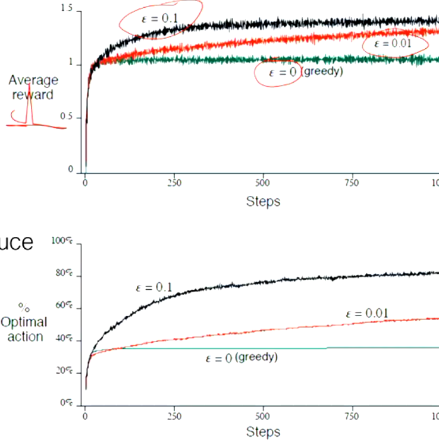
Softmax Method
The softmax method assigns probabilities to actions based on their estimated values. Actions with higher estimated values are more likely to be selected, but even low-value actions have a chance of being chosen:
Where is a temperature parameter: - High : All actions have nearly equal probability. - Low : Higher probability is assigned to the action with the highest value estimate.
Incremental Implementation of Action-Value Estimation
To update action-value estimates incrementally, the agent does not need to keep track of all past rewards. Instead, it can update the estimate based on the difference between the new reward and the current estimate. If is the estimate at timestep , the next estimate is updated as:
This method efficiently updates the action value without requiring the agent to store all past rewards.

Non-Stationary Problems and Step-Size
In non-stationary environments, where conditions change over time, the agent should give more weight to recent rewards than older ones. This can be achieved by using a constant step-size parameter :
Where: - is the step-size parameter (between 0 and 1), controlling how much the new reward influences the updated value estimate.
4.3 The Agent-Environment Interface
Non-Associative vs Associative Tasks
-
Non-Associative Tasks: Actions are chosen without considering the current situation. An example is a multi-armed bandit problem, where the agent chooses from multiple actions without needing to account for the state or context.
-
Associative Tasks: The agent must learn to map different situations (states) to actions. An example is a contextual bandit problem, where the context (such as colors) changes the reward structure for each action.
A full RL problem occurs when actions influence both the immediate reward and the next state, requiring the agent to consider the impact of its actions not just on short-term rewards, but also on future state transitions.
Episodic vs Non-Episodic Tasks
-
Episodic Tasks: The task has a clear end, where each episode finishes in a terminal state, and then resets to start over (e.g., games with rounds or levels).
-
Non-Episodic Tasks: The task continues indefinitely without a defined end. The agent must learn to maximize long-term rewards in an ongoing environment.
Examples:
- Episodic: A game with rounds where the agent starts over after each round.
- Non-Episodic: A stock trading system, where decisions are made continuously without a clear end.
Returns and Discounting
The return is the total sum of rewards received by the agent after time step . The agent aims to maximize this return:
For non-episodic tasks, where the task may continue indefinitely, the return could be infinite. To address this, agents maximize the discounted return, which places less emphasis on distant future rewards:
Where is the discount factor: - : Future rewards are discounted exponentially, with more weight given to immediate rewards. - : The agent is myopic, only caring about immediate rewards. - : The agent is foresighted, giving near-equal importance to future rewards.
Mathematical Definition
The discounted return from time step is defined as:
Where: - are the rewards at time steps . - is the discount factor, controlling the importance of future rewards.
Explanation
- Immediate rewards are valued more than future rewards, thanks to the discount factor. A higher value (closer to 1) means the agent values future rewards more, while a lower (closer to 0) makes the agent focus on short-term rewards.
- For example, with , rewards one step in the future are multiplied by 0.9, two steps in the future by , and so on.
Why Use Discounted Returns?
- Prevent Infinite Returns: In continuing tasks without a natural end, rewards could accumulate infinitely. Discounting ensures the total return remains finite.
- Time Preference: Immediate rewards are often more valuable in real-world problems, and discounting reflects this.
- Handle Uncertainty: Future rewards may be uncertain, and discounting helps de-emphasize rewards that are far away and possibly unreliable.
Summary
The discounted return is a method of calculating future rewards by giving more importance to immediate rewards than distant ones. The discount factor adjusts how much future rewards are devalued. It helps balance short-term and long-term gains while ensuring the return is finite in ongoing tasks.
Unified Notation
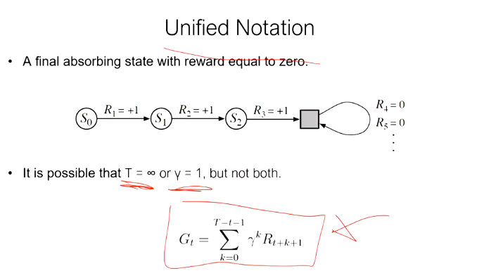
- The figure shows an example where the agent reaches a final absorbing state () beyond which all rewards are zero ().
- Absorbing state: Once reached, the agent remains in this state, and all future rewards are zero.
- It is noted that either (an infinite time horizon) or (no discounting) is possible, but not both. Having both would lead to an infinite return.
- The return is calculated as the sum of future rewards, discounted by :
This formula sums the rewards from time onward, with each reward being discounted based on how far into the future it occurs.
The Markov Property
In probability theory and statistics, the term Markov property refers to the memoryless property of a stochastic process, which means that its future state is independent of its history. It is named after the Russian mathematician Andrey Markov.
A Reinforcement Learning system satisfies the Markov property if the probability of the future state depends only on the current state and action , and not on any prior states or actions.
e.g. In Chess, the next move depends only on the current state of the pieces on the board, not on the history of the session.
The Markov property is crucial because it allows the agent to focus only on the current state to make decisions, simplifying the learning process; the agent doesn't need to remember the full history of states and actions, which makes solving the problem more efficient.
4.4 Value Functions
Value Functions are used to estimate the value of being in a certain state, or the value of taking a certain action in the given state. These estimates help the agent make decisions that maximize future rewards.
Types of Value Functions:
-
State-Value Function : represents the expected return (future cumulative rewards) from being in a state , following a policy
-
Action-Value Function : represents the expected return from being in a state , taking an action , and then following policy
State-Value Function:
The State-value function under a policy , denoted as or , is the expected return when starting in state and following policy thereafter.
Where: - : The value of state under policy . - : The return (sum of future rewards). - : The discount factor, which determines the importance of future rewards compared to immediate rewards. - : The reward received at time . - : the expected value, or the average of all the returns that the agent will get (across the episodes), starting from state , given the policy .
ExpectedValue(policy_pi) {
G_t = sum of future rewards starting at t
if agent is in state S_t = s {
return average(G_t over all action sequences from s, weighted by policy_pi)
}
}
, or Expected Value is a concept in probability theory.
denotes the maximum discounted reward obtainable in state s. i.e. The value of following the optimal policy
This formula calculates the expected sum of discounted rewards starting from state , and following policy .
Action-Value Function (Q-Value Function):
In reinforcement learning, Q-values (or action-value functions) help the agent decide which action to take in a given state by evaluating both the immediate reward and the long-term value of the resulting state.
Q-value Function :
The Q-value for a state-action pair is defined as:
Where: - is the immediate reward the agent receives for taking action in state , - is the discount factor, which reduces the importance of future rewards, - is the optimal state-value of the next state , representing the expected return when following the optimal policy from that state.
Why "Q"?: Early work in reinforcement learning used the letter "Q" to refer to the "quality" of a specific action in a state. Over time, this became a widely accepted notation.
Explanation:
- The Q-value combines the immediate reward with the discounted value of the next state , after the agent takes action .
- The agent assumes that it will follow the optimal policy from the next state onwards, which is why is used.
Components:
- : The reward received for taking action in state ,
- : The value of the succeeding state ,
- : The next state, , assuming the optimal policy is followed.
Summary:
- Q-values help the agent choose the action that maximizes the expected return, balancing immediate rewards with future rewards.
- The optimal policy can be derived by selecting the action with the highest Q-value in each state.
Formula:
Where: - is the immediate reward, - is the value of the next state, - is the discount factor that weighs future rewards.
4.5 Value Function Estimation Methods
In reinforcement learning, the goal is to learn a value function that estimates the expected cumulative reward (return) the agent will get from a given state (or state-action pair). The below three methods are commonly used for value function estimation:
- Monte Carlo Methods
- Temporal Difference (TD) Methods
- Dynamic Programming (DP) Methods
Each method has its own approach to updating the value function based on the agent's interactions with the environment.
Monte Carlo Methods
What are Monte Carlo Methods?
Monte Carlo methods are a class of algorithms that rely on random sampling to estimate numerical results.
The term "Monte Carlo" comes from the Monte Carlo Casino in Monaco, which is famous for gambling and randomness. The association with randomness fits Monte Carlo methods because they rely on random sampling to estimate values and solve problems in RL, much like games of chance in a casino.
The key idea is that Monte Carlo methods: - Accumulate rewards from the complete sequence of states, actions, and rewards (i.e., the episode). - Use the total return after an episode to update the value function for the states or actions experienced in that episode.
For example, after each episode, the return (sum of rewards from time until the end of the episode) is computed, and the value function is updated based on the average of many such returns.
Key Characteristics of Monte Carlo Methods:
- Model-free: Monte Carlo methods do not require a model of the environment.
- Episodic: Monte Carlo methods require that episodes eventually end, since they update the value function based on the total return from the episode.
- Delayed updates: Unlike Temporal-Difference (TD) methods, Monte Carlo methods update the value function only after the entire episode is complete. This makes them less efficient in some cases where immediate updates are preferred.
Temporal-Difference Prediction
Temporal Difference (TD) methods are a class of value function estimation techniques used in Reinforcement Learning. They combine ideas from both Monte Carlo methods and Dynamic Programming (DP), allowing the agent to learn from incomplete episodes and without a full model of the environment.
Key Features of TD Methods:
- Bootstrapping:
- TD methods update the value of the current state based not only on the immediate reward but also on the estimated value of the next state. This means TD methods "bootstrap" their estimates—they update based on other estimates.
-
Unlike Monte Carlo methods, which wait until the end of an episode, TD methods update the value function after every time step.
-
Real-time Learning:
-
TD methods can learn in real-time, during the agent's interaction with the environment. The agent updates its value estimates after each action, not after the entire episode finishes.
-
Model-free:
- Like Monte Carlo methods, TD methods do not require knowledge of the environment’s transition probabilities or rewards, making them model-free. They learn solely from the agent's experiences.
TD(0) Update Rule:
The simplest TD method is called TD(0), where the agent updates the value of the current state based on the reward received and the estimated value of the next state:
- : The value of the current state .
- : The learning rate, which controls how much we adjust the current estimate based on the new information.
- : The immediate reward received after taking action in state .
- : The discount factor, which weighs future rewards compared to immediate rewards.
- : The estimated value of the next state .
The term is known as the TD error, which represents the difference between the current value estimate and the newly updated estimate based on and .
How TD(0) Works:
- After each step in the environment, the agent:
- Takes an action and observes the next state and reward.
- Updates the value of the current state using the TD(0) update rule.
- Repeats this process for each time step, improving its estimates as it gains more experience.
TD(0) Example:
Let’s say the agent is in state , takes an action, and receives a reward , transitioning to state . The current value estimate of is , and the value estimate of the next state is . The reward is 3, and the learning rate , with a discount factor .
The TD update would be: After the update, the new estimate of becomes 5.52.
Advantages of TD Methods:
- Sample Efficiency: TD methods update values after each action, allowing the agent to learn faster compared to methods like Monte Carlo that wait for the episode to finish.
- Real-Time Updates: The agent can update its estimates during an episode, making it well-suited for both continuing tasks (with no clear episode end) and episodic tasks.
- No Need for a Full Model: Like Monte Carlo, TD methods are model-free, meaning they don’t require a complete model of the environment’s dynamics.
Extensions of TD Methods:
- TD(λ): A more advanced version of TD, which introduces eligibility traces to blend between TD(0) and Monte Carlo methods, allowing the agent to update states visited earlier in the episode.
- SARSA: An on-policy TD control method, where the agent updates its action-value function based on the action it actually takes.
- Q-Learning: An off-policy TD control method, where the agent learns the optimal action-value function by updating based on the maximum possible action-value.
Summary:
- Temporal Difference (TD) methods combine the strengths of Monte Carlo and Dynamic Programming, allowing value updates during episodes without needing a full environment model.
- TD(0) updates the value function after each time step based on the immediate reward and the estimated value of the next state.
- TD methods are crucial for real-time, model-free learning, enabling an agent to maximize rewards over time by continuously improving its value function.
5. Metaheuristics
Metaheuristics and heuristics are both optimization methods, but they differ in scope, flexibility, and application.
Heuristics
- Problem-specific: Heuristics are designed to solve a specific problem or class of problems. They incorporate domain-specific knowledge to find a solution quickly but may not work well for other types of problems.
- Greedy approach: Heuristics often use a greedy strategy to make decisions that seem best at the moment, without considering future consequences. This can lead to suboptimal solutions.
- Limited exploration: Heuristics typically focus on a small region of the solution space, leading to less exploration.
- Efficiency: They are generally very fast and simple, often used for real-time applications where finding a good enough solution quickly is more important than finding the optimal solution.
- Example: In a route-finding problem, the nearest neighbor heuristic chooses the next city based on proximity, aiming for short-term gains but possibly missing the global optimum.
Metaheuristics
- Problem-independent: Metaheuristics are general frameworks that can be adapted to solve a wide range of problems. They don't rely on domain-specific knowledge, making them more flexible.
- Balancing exploration and exploitation: Metaheuristics aim to explore the solution space thoroughly (exploration) while refining promising areas (exploitation). This reduces the risk of getting stuck in local optima.
- Memory use: Some metaheuristics maintain a memory of past solutions (e.g., Tabu Search), which helps guide future decisions and improve search efficiency.
- Trade-off: Metaheuristics are generally slower than heuristics because they perform a more comprehensive search, but they are more likely to find near-optimal or optimal solutions.
- Example: Genetic Algorithms and Simulated Annealing are metaheuristics that apply to various types of optimization problems by mimicking natural or physical processes.
Summary Table
| Feature | Heuristics | Metaheuristics |
|---|---|---|
| Problem scope | Problem-specific | Problem-independent |
| Strategy | Greedy, localized search | Balances exploration & exploitation |
| Exploration | Limited | Wide exploration |
| Speed | Very fast | Slower but more thorough |
| Memory use | Typically none | May use memory (e.g., Tabu Search) |
| Example | Nearest neighbor | Simulated Annealing, Genetic Algorithms |
In essence, heuristics are quicker and simpler but may miss optimal solutions, while metaheuristics offer a broader, more flexible approach, often yielding better results at the cost of increased computational effort.
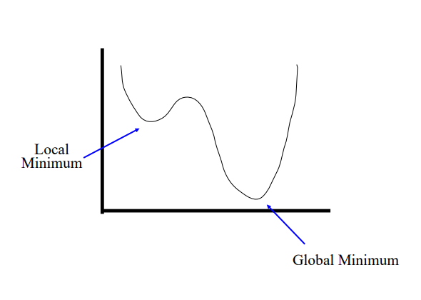
Deterministic vs Stochastic
Deterministic Methods
- Definition: Deterministic methods are algorithms or processes that will always produce the same output from a given initial condition. There is no randomness involved in these methods, and they follow a specific set of rules.
- Characteristics:
- The same input always leads to the same output.
- The process is fully predictable and repeatable.
- Often used in algorithms where the problem has a well-defined solution space (e.g., shortest path algorithms).
- Example: Dijkstra's algorithm for shortest paths in graphs, which always finds the shortest path for a given input.
Stochastic Methods
- Definition: Stochastic methods introduce randomness or probability in their processes. The output can vary, even with the same initial input, due to random elements in the algorithm.
- Characteristics:
- These methods are more exploratory, often used when the search space is too large or complex to explore exhaustively.
- Different runs with the same input can lead to different outputs, potentially discovering better solutions in optimization problems.
- Example: Simulated Annealing or Genetic Algorithms, which rely on randomness to explore the solution space more widely.
Key Differences
- Predictability: Deterministic methods always give the same result, while stochastic methods can give different results on different runs.
- Exploration: Stochastic methods explore a larger solution space due to randomization, while deterministic methods stick to a fixed path.
- Efficiency: Deterministic methods can be more efficient but may miss global optima, while stochastic methods can escape local minima but may require more computational effort.
First-order Gradient Methods
- Definition: First-order gradient methods are optimization algorithms that use the first derivative (gradient) of the objective function to guide the search for the optimal solution.
- How it works: These methods follow the steepest descent direction to minimize (or maximize) a function by adjusting the variables in proportion to the negative of the gradient.
- Characteristics:
- Only the gradient (first derivative) is needed, making them computationally inexpensive.
- They work well for convex problems* but may get stuck in local minima in non-convex problems.
- Example: Gradient Descent, Stochastic Gradient Descent (SGD), Momentum, Adam (ADAptive Moment) Estimation
Advantages
- Simplicity and ease of implementation.
- Suitable for large-scale problems and real-time applications due to their efficiency.
- Can be enhanced with momentum or adaptive learning rates (e.g., Adam Optimizer).
Disadvantages
- May converge slowly.
- Can get stuck in local minima for non-convex problems.
- Requires careful tuning of the learning rate.
A convex problem* is an optimization problem where the objective function and the feasible region exhibit specific convexity properties. Convexity makes these problems easier to solve because local optima are also global optima. e.g. Minimizing the quadratic function is a convex problem because the function is convex, and it has a unique global minimum at .
1. Gradient Descent (GD)
Definition:
Gradient Descent (GD) is an optimization algorithm that minimizes a cost function by computing the gradient (first derivative) of the cost function and updating the parameters in the opposite direction of the gradient.
Characteristics:
- Full-batch Gradient: It computes the gradient using the entire dataset.
- Update Rule: where is the learning rate, is the parameter at time , and is the gradient of the cost function .
Advantages:
- Guarantees a smooth and stable convergence in convex problems.
- Each step moves towards the optimal solution.
Disadvantages:
- Computationally Expensive: Requires computing the gradient on the entire dataset at every step, which can be slow for large datasets.
- Memory-intensive: Needs to load the entire dataset into memory.
2. Stochastic Gradient Descent (SGD)
Definition:
Stochastic Gradient Descent (SGD) is a variant of GD that updates the parameters using only one random sample (or a small batch) of the dataset at a time.
Characteristics:
- Mini-batch or Single-sample Gradient: It computes the gradient using a randomly selected data point or mini-batch at each iteration.
- Update Rule:
Advantages:
- Faster Updates: Since each update only requires a single data point, it can perform updates much more quickly, especially for large datasets.
- Better Generalization: The noisy updates help prevent overfitting by introducing randomness.
- Escapes Local Minima: Due to the noisy updates, SGD can jump out of local minima in non-convex problems.
Disadvantages:
- Noisy Convergence: The randomness introduces noise, which can cause the parameter updates to overshoot the optimum or oscillate around it.
- Requires Learning Rate Decay: SGD often needs a decaying learning rate to stabilize the convergence.
3. Momentum
Definition:
Momentum is an extension of Gradient Descent that adds a velocity vector (or momentum term) to smooth out updates and speed up convergence, especially in directions with small gradients.
Characteristics:
- Momentum-enhanced Gradient Descent: It builds velocity from past gradients to make larger, more informed steps.
- Update Rule: where (usually 0.9) is the momentum term and is the velocity that builds up over time.
Advantages:
- Faster Convergence: Momentum accelerates movement along directions with consistent gradients, allowing for faster convergence.
- Reduced Oscillations: It helps reduce oscillations, especially in narrow or steep valleys in the optimization landscape.
Disadvantages:
- Hyperparameter Tuning: Momentum requires careful tuning of both the learning rate and the momentum parameter .
4. Adam (Adaptive Moment Estimation)
Definition:
Adam is an adaptive learning rate optimization algorithm that combines the advantages of both SGD with Momentum and RMSProp (which adapts the learning rate for each parameter).
Characteristics:
- Adaptive Learning Rates: Adam adjusts the learning rate for each parameter using estimates of the first moment (mean of the gradients) and the second moment (variance of the gradients).
- Update Rule:
- First Moment Estimate (Mean):
- Second Moment Estimate (Variance):
- Bias Correction:
- Parameter Update: where is the learning rate, and is a small constant to avoid division by zero.
Advantages:
- Fast Convergence: Adam converges quickly due to adaptive learning rates and momentum.
- Less Hyperparameter Tuning: The adaptive nature of Adam makes it easier to tune compared to vanilla GD or Momentum.
- Handles Sparse Data: Adam works well in scenarios with sparse data or noisy gradients.
Disadvantages:
- Overfitting: Adam’s fast convergence can sometimes lead to overfitting if the learning rate is not properly tuned.
- Non-convergence in some cases: Adam can fail to converge in certain settings compared to simpler methods like SGD.
Summary Table
| Feature | Gradient Descent (GD) | Stochastic Gradient Descent (SGD) | Momentum | Adam |
|---|---|---|---|---|
| Gradient Computation | Full dataset | Single sample or mini-batch | Full dataset or mini-batch | Adaptive (using first and second moments) |
| Computational Cost per Update | High | Low | High | Moderate |
| Update Frequency | Once per epoch | Per sample/mini-batch | Once per epoch | Once per sample/mini-batch |
| Learning Rate | Constant | Constant or decaying | Constant or decaying | Adaptive |
| Momentum | No | No | Yes | Yes |
| Speed | Slow on large datasets | Fast | Faster than GD | Fastest |
| Convergence Stability | Stable but slow | Noisy, oscillates | More stable than SGD | Stable, fast, but can overfit |
| Best for | Small datasets, convex problems | Large datasets, noisy problems | Convex problems with faster convergence | Large datasets, non-convex problems |
Second-order Newton’s Methods
- Definition: Newton's methods are second-order optimization techniques that use both the first and second derivatives (gradient and Hessian) to guide the search for the optimal solution.
- How it works: These methods utilize the Hessian matrix (second derivative of the function) to approximate the curvature of the solution space, allowing for faster and more accurate convergence towards the optimal solution.
- Characteristics:
- Requires computation of the Hessian matrix, which makes it more computationally expensive compared to first-order methods.
- Converges faster than first-order methods, especially near the optimal solution.
- Example: Newton's Method, Broyden–Fletcher–Goldfarb–Shanno (BFGS) algorithm.
Advantages
- Faster convergence, especially near local or global minima.
- More accurate steps due to the use of second-order information.
Disadvantages
- High computational cost, especially for large problems, due to the need to compute the Hessian matrix.
- May be impractical for very large-scale problems.
Single-solution Metaheuristics
- Definition: Single-solution metaheuristics focus on improving one candidate solution iteratively through local search techniques. These algorithms generally rely on making small modifications to the current solution and evaluating its performance.
- Characteristics:
- These methods start with an initial solution and modify it iteratively to improve it.
- They often incorporate strategies to escape local optima, such as simulated annealing.
- Example: Simulated Annealing, Tabu Search.
Advantages
- Simple and easy to implement.
- Focuses computational power on improving one solution, potentially leading to fast convergence for small-scale problems.
- Suitable for problems where the neighborhood of a solution is easy to explore.
Disadvantages
- Can get stuck in local optima if the problem landscape is complex.
- Less diversity in exploration since only one solution is considered at a time.
Population-based Algorithms
Summary Table
| Feature | First-order Gradient Methods | Second-order Newton's Methods | Single-solution Metaheuristics | Population-based Algorithms |
|---|---|---|---|---|
| Type | First-order (uses gradient) | Second-order (uses gradient + Hessian) | Iterative search using one solution | Operates on a population of solutions |
| Speed | Fast but may be slow in non-convex | Slower per step but faster convergence | Fast but may get stuck in local minima | Slower but explores larger search space |
| Convergence | Slower, may get stuck in local minima | Faster convergence near solution | Moderate, risk of local minima | Robust, avoids local minima |
| Computational Cost | Low (only first derivative) | High (requires second derivative) | Moderate | High (requires population evaluation) |
| Example | Gradient Descent, SGD | Newton’s Method, BFGS | Simulated Annealing, Tabu Search | Genetic Algorithms, Particle Swarm |
-
Egg holder?
-
5.1 Asymptotic Complexity
- 5.2 Classes of Problems
P, NP, NP-complete
5.4 Classes of Problems
In optimization and computational complexity theory, problems are classified based on the time they take to be solved and the computational resources they require. The classification helps in understanding the difficulty of a problem and the best strategies to solve it.
1. Class P
- Definition: Problems in class P are those that can be solved in polynomial time on a deterministic computer.
- Characteristics:
- Problems in class P are considered "tractable," meaning they can be solved efficiently.
- The time required to solve the problem grows at a polynomial rate relative to the input size.
- These problems have algorithms that run in time complexity such as , , or , etc.
- Examples:
- Quicksort
- Binary search
- Matrix multiplication
2. Class NP
- Definition: Class NP contains problems for which a proposed solution can be verified in polynomial time on a deterministic computer, but finding the solution may not necessarily be feasible in polynomial time.
- Characteristics:
- NP problems are known as "intractable" problems because solving them efficiently is difficult.
- If a solution is given, it can be checked quickly (in polynomial time).
- P is a subset of NP: , meaning that if a problem can be solved quickly (in class P), its solution can also be verified quickly (in class NP).
- Examples:
- Subset sum problem
- Sudoku
- Traveling Salesman Problem (TSP)
3. Class NP-Complete
- Definition: NP-complete problems are a subset of NP problems that are among the hardest to solve. No polynomial-time algorithms are known for these problems, and it is unknown if any exist.
- Characteristics:
- If a polynomial-time algorithm is found for any NP-complete problem, it can be used to solve all NP problems in polynomial time, implying .
- NP-complete problems require exponential time (or worse) to solve with known algorithms.
- These problems are often solved using heuristics or approximation algorithms.
- Examples:
- Traveling Salesman Problem (TSP), which has time complexity
- Subset sum problem
- Boolean satisfiability problem (SAT), which was the first problem proven to be NP-complete (Cook’s theorem, 1971)
4. P vs NP Problem
- The Open Question: "Is ?" is one of the biggest unsolved questions in computer science.
- Most Accepted Hypothesis: It is widely believed that , meaning that problems that can be verified quickly (NP) cannot always be solved quickly (P).
5. Approaches to NP Problems
Since NP-complete problems are difficult to solve efficiently, several approaches are typically used: - Approximation Algorithms: Algorithms that find solutions that may not be optimal but are within a certain range of the optimal solution. - Heuristics and Metaheuristics: Techniques that provide reasonably good solutions for many cases without guaranteeing optimality. These include methods like genetic algorithms and simulated annealing. - Simplification: In some cases, simplifying the problem can make it easier to solve. For example, relaxing constraints or working with smaller problem instances.
- 5.3 Linear Programming
A feasible solution is a set of values for the decision variables that satisfies all of the constraints in an optimization problem. The set of all feasible solutions defines the feasible region of the problem. Most optimization algorithms operate by first trying to locate any feasible solution, and then attempting to find another (better) feasible solution that improves the value of the objective function. This process of trying to find improving feasible solutions repeats until either no further improvement is possible or some other stopping criteria is met.
As shown in the illustration below, a global optimal solution is one where there is no other feasible solution with a better objective function value. A local optimal solution is one where there is no other feasible solution "in the vicinity" with a better objective function value.
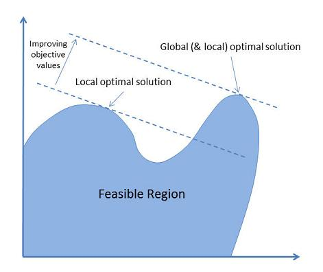
- 5.4 Search Space
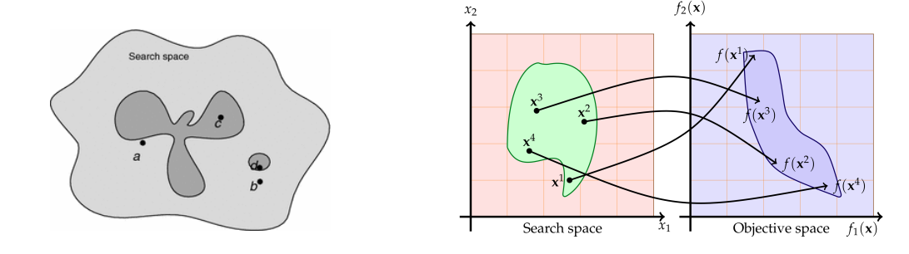
1. Solution Space (S) and Objective Function (f)
- The solution space (S) represents all possible solutions to the optimization problem. Each point in this space is a potential solution.
- The objective function (f) evaluates each solution based on how well it satisfies the problem's goal (e.g., maximizing profit or minimizing cost).
2. Optimization Problem
- The goal is to solve the optimization problem by finding the optimal solution , such that: This means you are looking for the solution that minimizes or maximizes the objective function within the solution space .
3. Constraints and Feasible Region
- Constraints are conditions that limit the solutions in the search space. They reduce the universe of solutions to a feasible region (denoted as ).
Constraints can either be: Strong: These must be satisfied in any valid solution. Weak: These are recommended to be satisfied but are not strictly mandatory.
- The feasible region is where all the constraints are satisfied, and only solutions inside this region are considered valid.
The choice between restricted and complete exploration depends on the problem and the computational resources available. In some cases, focusing on feasible solutions may save time but miss optimal solutions, while a complete search may offer more thorough exploration at the cost of increased computational effort.
- A penalty function is added to the original objective function to handle constraint violations. This allows the algorithm to explore infeasible regions but imposes penalties on solutions that violate the constraints.
Objective Function with Penalty:
where: - : The original objective function. - : The penalty function, which penalizes violations of the constraints. - : A weighting coefficient that determines the trade-off between minimizing the objective function and penalizing constraint violations.
- When the solution is feasible, , meaning there is no penalty applied.
- When the solution violates constraints, increases based on the degree of violation. The more the violation, the larger the penalty, discouraging the algorithm from accepting infeasible solutions.
4. Graphical Representation
- On the left side of the image:
- The search space is shown as a large area with possible solutions scattered within it. The gray and shaded regions illustrate where solutions are feasible or infeasible.
- On the right side of the image:
- The search space is mapped to the objective space.
- The points in the search space correspond to values in the objective space, which are evaluated by the objective function .
- The arrows show how the solutions in the search space map to the objective values, where you are trying to find the point that optimizes .
5. Key Insights
- The feasible region reduces the set of all possible solutions to those that satisfy the problem’s constraints.
- The goal of the optimization is to search within the feasible region for the point that maximizes or minimizes the objective function .
- The mapping from the search space to the objective space helps visualize how each solution performs according to the objective function.
https://en.wikipedia.org/wiki/Local_search_(optimization)
A local search algorithm starts from a candidate solution and then iteratively moves to a neighboring solution; a neighborhood being the set of all potential solutions that differ from the current solution by the minimal possible extent. This requires a neighborhood relation to be defined on the search space. As an example, the neighborhood of vertex cover is another vertex cover only differing by one node. For Boolean satisfiability, the neighbors of a Boolean assignment are those that have a single variable in an opposite state. The same problem may have multiple distinct neighborhoods defined on it; local optimization with neighborhoods that involve changing up to k components of the solution is often referred to as k-opt.
Typically, every candidate solution has more than one neighbor solution; the choice of which one to select is taken using only information about the solutions in the neighborhood of the current assignment, hence the name local search. When the choice of the neighbor solution is done by taking the one locally maximizing the criterion, i.e.: a greedy search, the metaheuristic takes the name hill climbing. When no improving neighbors are present, local search is stuck at a locally optimal point. This local-optima problem can be cured by using restarts (repeated local search with different initial conditions), randomization, or more complex schemes based on iterations, like iterated local search, on memory, like reactive search optimization, on memory-less stochastic modifications, like simulated annealing.
Local search does not provide a guarantee that any given solution is optimal. The search can terminate after a given time bound or when the best solution found thus far has not improved in a given number of steps. Local search is an anytime algorithm; it can return a valid solution even if it's interrupted at any time after finding the first valid solution. Local search is typically an approximation or incomplete algorithm because the search may stop even if the current best solution found is not optimal. This can happen even if termination happens because the current best solution could not be improved, as the optimal solution can lie far from the neighborhood of the solutions crossed by the algorithm.
5.5 Memoryless vs Memory-based
Metaheuristics are optimization algorithms used to solve complex problems where traditional methods may be inefficient. They are generally categorized into two types: memoryless and memory-based metaheuristics.
1. Memoryless Metaheuristics
- Definition: Memoryless metaheuristics do not retain information about past solutions or the search history. Each decision made during the search process is based solely on the current solution or state, with no influence from previous iterations. (Most memoryless metaheuristics can be modified to become memory-based)
Characteristics:
- No Memory: The algorithm only uses the current solution and its immediate neighbors to decide the next move. It does not store or leverage past solutions.
- Focus on Exploration: These metaheuristics often rely on randomization or stochastic processes to explore the search space.
- Suitable for Large Problems: Since no memory is stored, these methods can be computationally efficient in problems where storing or accessing past information is impractical.
Examples:
- Simulated Annealing: It uses random sampling to explore new solutions without retaining memory of past solutions.
- Randomized Local Search: It evaluates the neighbors of the current solution without considering previous states.
2. Memory-Based Metaheuristics
- Definition: Memory-based metaheuristics retain and use information from previous solutions to guide the search process. These algorithms leverage the search history to avoid revisiting poor solutions and to focus on promising areas of the search space.
Characteristics:
- Use of Memory: These algorithms store past information, such as the best solutions, the frequency of solution features, or areas to avoid (e.g., Tabu List).
- Guided Search: By remembering previous moves and results, the algorithm can make more informed decisions and adapt the search strategy.
- Balancing Exploration and Exploitation: The use of memory helps in balancing between exploring new areas of the solution space and exploiting known good areas.
Examples:
- Tabu Search: Uses a memory structure called a "tabu list" to store recently visited solutions and avoid cycling back to them.
-
Genetic Algorithms: Store and evolve a population of solutions over iterations by keeping track of "genetic material" (solutions) and using operators like crossover and mutation.
-
Memoryless metaheuristics are simpler, faster, and require less computational overhead, making them suitable for problems where memory is limited or where fast exploration is needed.
- Memory-based metaheuristics use memory to avoid revisiting poor solutions, resulting in a more informed and potentially more effective search, though at the cost of increased complexity and memory usage.
Simulated annealing is a probabilistic optimisation algorithm inspired by the annealing process in material science. It is used to find a near-optimal solution among an extremely large (but finite) set of potential solutions. It is particularly useful for combinatorial optimization problems defined by complex objective functions that rely on external data.
The process involves:
- Randomly move or alter the state
- Assess the energy of the new state using an objective function
- Compare the energy to the previous state and decide whether to accept the new solution or reject it based on the current temperature.
- Repeat until you have converged on an acceptable answer
- For a move to be accepted, it must meet one of two requirements:
The move causes a decrease in state energy (i.e. an improvement in the objective function) The move increases the state energy (i.e. a slightly worse solution) but is within the bounds of the temperature. The temperature exponetially decreases as the algorithm progresses. In this way, we avoid getting trapped by local minima early in the process but start to hone in on a viable solution by the end.
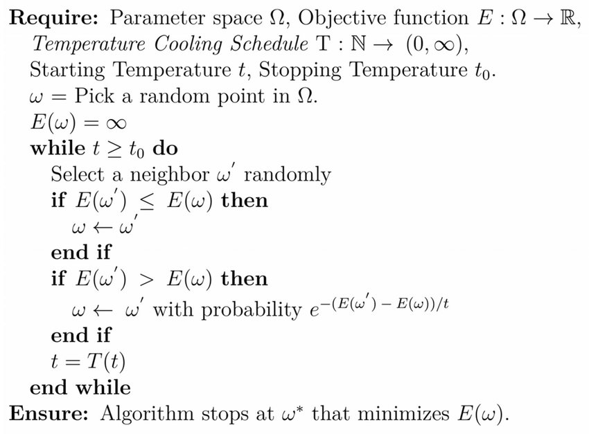
The cooling temperature (aka Temperature Descent) defines how the temperature decreases over time As the temperature 𝑡 decreases, the probability of accepting worse solutions (as defined by the probability function ) reduces, making the algorithm focus more on local improvements and less on random exploration.
--
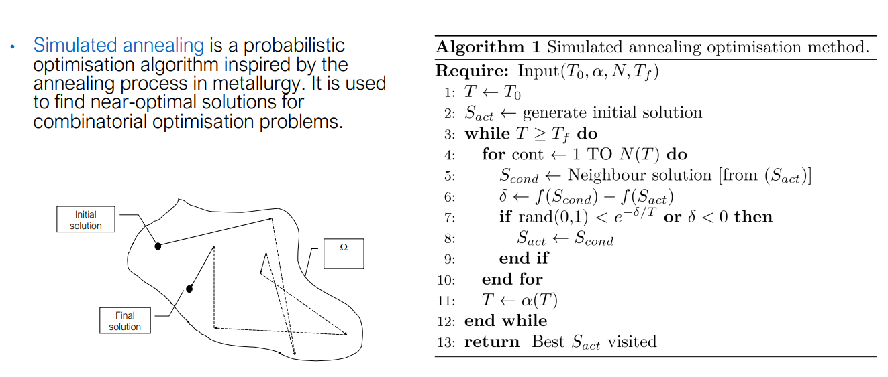
Game Balancing Example Using Simulated Annealing
Let's consider a scenario where Simulated Annealing (SA) is used to balance a role-playing game (RPG) where different character classes (e.g., warrior, mage, archer) need to be balanced in terms of their damage output, defense, and abilities. The goal is to ensure no class is overpowered or too weak, providing a fair and enjoyable gameplay experience.
Scenario:
In a multiplayer RPG, players can choose different classes (e.g., warrior, mage, archer). Each class has the following attributes: - Health Points (HP): Durability or survivability of the class. - Attack Damage (AD): Damage the class deals per attack. - Defense (DEF): Reduces the incoming damage. - Special Abilities: Each class has unique abilities that affect gameplay.
The current state of the game is imbalanced: - The mage deals too much damage, making it overpowered. - The warrior has too much health and defense, making it hard to defeat.
Our goal is to balance the classes by adjusting their stats and abilities.
Problem Definition:
The problem is framed as an optimization problem where we aim to adjust the stat values (HP, AD, DEF) and abilities to minimize an imbalance score — a measure of how unbalanced the game is.
- Objective: Minimize the imbalance score across all classes.
- Constraints: Each class must retain its distinct playstyle (e.g., the mage focuses on damage but can't be overpowered).
Steps Using Simulated Annealing:
1. Define the Solution Space:
Each possible combination of stat values (HP, AD, DEF) and ability strength for the classes represents a point in the solution space. For example: - Warrior: HP = 3000, AD = 100, DEF = 200. - Mage: HP = 1500, AD = 300, DEF = 50. - Archer: HP = 2000, AD = 200, DEF = 100.
2. Define the Objective Function (Imbalance Score):
The imbalance score measures how unbalanced the game is. The goal is to minimize this score, which can be based on: - Win/loss ratios between classes. - Damage per second (DPS) and survivability.
A simple imbalance score can be: Where represents the damage per second for each class.
3. Generate an Initial Solution:
Start with an initial configuration of stats, which could be the current unbalanced state: - Warrior: HP = 3500, AD = 100, DEF = 250. - Mage: HP = 1200, AD = 350, DEF = 50. - Archer: HP = 2200, AD = 220, DEF = 150.
4. Iteratively Explore Neighboring Solutions:
- Transformations: Adjust the stats of one or more classes slightly (e.g., reduce the mage’s AD, increase the warrior’s AD, adjust the HP of the archer).
- Evaluate the new imbalance score for the adjusted configuration. Accept the new solution if the score improves, or accept it with some probability if the score worsens to allow exploration.
5. Simulate Battles (Evaluate Objective Function):
Simulate battles between the classes (e.g., warrior vs. mage, mage vs. archer) and record the win/loss ratios, DPS, and survivability. Use these results to compute the new imbalance score.
6. Cooling Schedule (Temperature Descent):
Use a cooling schedule to gradually reduce the temperature, transitioning from exploration to exploitation. A common cooling schedule: Where is a cooling factor (e.g., 0.95) and is the current iteration.
7. Convergence:
The algorithm continues to adjust the stats until it converges to a balanced configuration where the imbalance score is minimized. A final balanced solution might look like: - Warrior: HP = 3000, AD = 110, DEF = 200. - Mage: HP = 1500, AD = 290, DEF = 60. - Archer: HP = 2000, AD = 200, DEF = 120.
This configuration ensures that no class is too weak or too strong while maintaining their unique playstyles.
Summary of Balanced Solution:
After running Simulated Annealing, the algorithm finds a balanced set of stats and abilities for the classes: - Warrior: High defense and moderate attack, designed to be a tank. - Mage: High damage with low defense, focusing on powerful spells. - Archer: Balanced between attack and defense, specializing in ranged attacks.
Tabu Search
https://en.wikipedia.org/wiki/Tabu_search
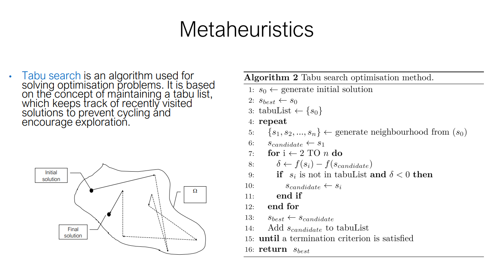
At each step, the algorithm evaluates a set of neighboring solutions to decide the next move. These neighboring solutions are generated by making small changes (called moves) to the current solution. Before a move is accepted, the algorithm checks the Tabu List to ensure the move isn't "tabu" (forbidden). If the move is in the Tabu List, it is typically not considered, unless an aspiration criterion is met (e.g., the move produces a new global best solution). Once a move is made and a new solution is reached, the move or solution is added to the Tabu List for a fixed number of iterations (the Tabu Tenure), preventing the algorithm from reversing the move or re-exploring that solution in the near future.
Main Characteristics:
- Memory-based: The Tabu List prevents cycling and revisiting the same solution.
- Flexible exploration: The algorithm can explore worse solutions to escape local minima.
- Aspiration criteria: Allows overriding the tabu status if the move leads to a solution that is significantly better than any found before.
Tabu Search Algorithm (Pseudocode)
- Initialization:
- : Generate an initial solution .
- : Set the best solution to the initial solution.
-
Tabu List : Initialize the Tabu List with the starting solution .
-
Main Loop:
-
Repeat until a termination criterion is met:
- Neighborhood Generation: Generate a set of neighboring solutions from the current solution .
- Select a Candidate:
- Set the candidate solution .
- Evaluate each neighbor :
- Compute the change in the objective function: .
- If the neighbor is not in the Tabu List and (i.e., it's a better solution), update .
- Update Current Best:
- If is better than , update .
- Update Tabu List:
- Add the new to the Tabu List to prevent immediate revisiting.
- Remove old entries from the Tabu List when they exceed a certain length (Tabu Tenure).
-
End Condition: The algorithm repeats the process until a stopping criterion is met (e.g., a fixed number of iterations, or no improvement in a set number of iterations).
-
Return: The best solution found during the search.
Example Steps:
- Initial Solution: Begin with an initial solution (e.g., a specific configuration in a combinatorial problem).
- Neighborhood Exploration: Generate nearby solutions by making small changes (e.g., swapping elements).
- Tabu List: If a move has already been explored recently, mark it as "tabu" to prevent cycling.
- Aspiration Criteria: Even if a solution is on the Tabu List, allow it if it represents a significant improvement over the current best solution.
Summary:
Tabu Search enhances local search by: - Using memory to avoid cycling through previously visited solutions. - Exploring new areas of the search space by accepting worse solutions temporarily. - Providing a mechanism (Tabu List) to remember recent moves and guide the search process effectively.
--
5.5 Population-based Algorithms
Population-based algorithms operate on a population of candidate solutions rather than a single solution. The population is typically initialized randomly or using heuristic techniques. Multiple solutions are evaluated simultaneously, allowing for the exploration of the search space more efficiently.
• Advantages: ability to simultaneously explore multiple regions of the search space, promoting diversity and preventing premature convergence to suboptimal solutions. • Disadvantages: it may require careful parameter tuning and can be computationally demanding due to the population size and iterative nature of the algorithms. • Examples of bio-inspired population-based methods include ant colony optimisation, black hole algorithm, particle swarm optimisation, and genetic algorithms.
Genetic Algorithms
Genetic Algorithm is a metaheuristic based on Darwin’s evolution theory
which models the process of evolution in nature by applying evolutionary operators (like mutation, crossover, and selection) to a population of candidate solutions, which are analogous to chromosomes. The goal of GA is to optimize a given objective (fitness) function by iteratively evolving a population of solutions.
https://www.youtube.com/watch?v=XP2sFzp2Rig&t=23s
• “One general law, leading to the advancement of all organic beings, namely, multiply, vary, let the strongest live and the weakest die.” Charles Darwin. • Stochastic search technique based on the mechanisms of natural selection and natural genetics. • Use analogies of natural selection to develop better solutions. • Widely used in problems of nonlinear and high-dimensional optimisation.
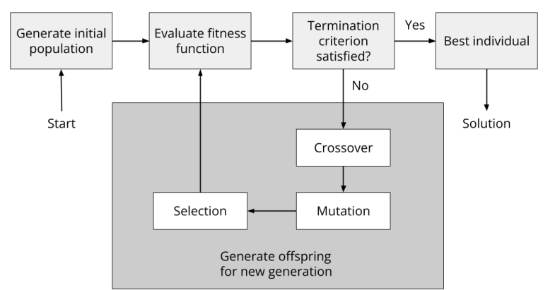
The diagram illustrates the 5 steps in a genetic algorithm:
- Generate Initial Population: Start by randomly generating an initial population of candidate solutions.
- Evaluate Fitness Function: Each candidate solution is evaluated based on a fitness function that measures its quality or how well it solves the problem.
- Check Termination Criteria: If the termination criteria (e.g., a set number of iterations or reaching an optimal solution) are met, the algorithm ends, and the best individual is returned as the solution.
- Crossover and Mutation: If the termination criteria are not satisfied, the algorithm proceeds to apply crossover and mutation to create new offspring, which will form the population for the next generation.
- Selection: The best-performing individuals are selected for reproduction in the next generation, promoting the survival of the fittest.
Terminology
The chromosome represents a possible solution to the problem, composed of genes (bits) with specific alleles at particular loci. The genotype is the internal structure (how the solution is represented), while the phenotype is the external interpretation or output of the solution.
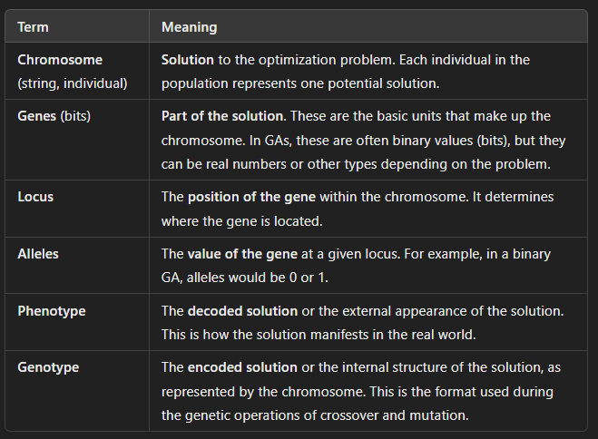
The search space is explored by applying transformations to candidate solutions, just as observed in living organisms: crossover, mutation, and selection.
GA has 3 core operators: Crossover, Mutation, and Selection: - Selection: Select individuals based on their fitness scores. Fitter individuals are more likely to be selected for reproduction. - Crossover: Combine parts of two parent solutions to create offspring (new solutions). - Mutation: Introduce small random changes to individuals to maintain diversity.
Selectvie Pressure describes how strongly the algorithm favors better-performing solutions over weaker ones during the selection process. • High pressure: Can speed up the algorithm by quickly focusing on the best solutions but the search may end prematurely (intensification, premature convergence where diversity is lost, and the algorithm might get stuck in local optima.) • Low pressure: Increases diversity in the population and reduces the risk of premature convergence but progress is slower than necessary. • The ideal approach is to maintain low pressure at the beginning for broad exploration, and high pressure towards the end to exploit more promising areas.
Chromosome commonly represented as strings of bits or binary representation. • Parameters include population size and probability of applying the genetic operators
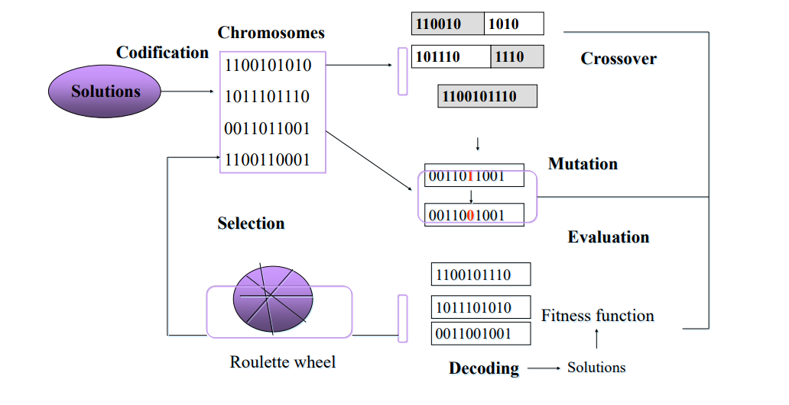
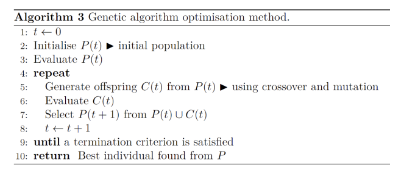
This pseudocode describes the steps followed by a Genetic Algorithm (GA) to evolve solutions over generations, ultimately aiming to optimize a given problem.
-
t ← 0
Initialize the generation countertto 0. -
Initialize P(t)
Generate an initial population , a collection of randomly generated candidate solutions. -
Evaluate P(t)
Calculate the fitness of each individual in the population . The fitness function determines how good each solution is in solving the problem. -
repeat
The algorithm repeatedly performs the following steps until a termination criterion is met (such as a maximum number of generations or when the solution converges): -
Generate offspring C(t)
Create a new set of candidate solutions (offspring) from the current population by applying genetic operators:- Crossover: Combine pairs of parent solutions to produce offspring.
- Mutation: Introduce random changes to offspring to maintain diversity.
-
Evaluate C(t)
Calculate the fitness of each individual in the new offspring population . -
Select P(t + 1)
Create the next generation population by selecting individuals from both the current population and the new offspring . This selection favors fitter individuals to ensure that the next generation is more likely to contain better solutions. -
t ← t + 1
Increment the generation counter. -
until a termination criterion is satisfied
The loop continues until a termination criterion is met, such as: - A maximum number of generations has been reached.
-
The population has converged to a stable solution (no further significant improvement in fitness).
-
Return the best individual found from P
Once the algorithm terminates, return the best solution from the final population .
Summary of Key Steps:
- Initialization: Start with a random population.
- Evaluation: Calculate the fitness of each solution.
- Genetic Operators: Apply crossover and mutation to create new offspring.
- Selection: Form the next generation by selecting the best individuals.
- Termination: The process continues until a termination condition is met, and the best solution is returned.
Uniform vs Expanded Generation Size:
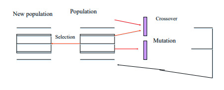
In this approach, the size of the new generation is the same as the previous generation. This ensures that the algorithm maintains a constant population size across iterations. The diagram shows the flow: - Population (current generation) undergoes crossover and mutation to produce offspring. - A selection mechanism picks individuals from both the current population and the offspring to form the new population.
This ensures the new generation maintains a uniform size and consists of a combination of both newly generated offspring and some retained parents.
In the traditional version of genetic algorithms, all offspring replace all parents in the next generation. However, the approach shown in the diagram allows a mix of all offspring and some parents to form the new population. This helps maintain some level of diversity and allows potentially strong parent solutions to persist into the next generation, preventing premature convergence to suboptimal solutions.
Expanded generation size means that the size of the new generation is increased compared to the previous generation. 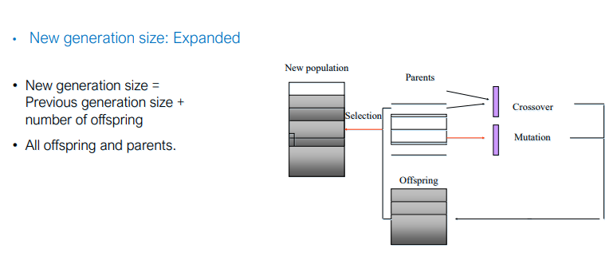 - The new generation size is calculated as: New generation size = Previous generation size + Number of offspring - This means the new population contains all parents and all offspring produced through genetic operations like crossover and mutation.
-
All offspring and parents are included in the next generation. This method keeps both the existing parents (which may contain well-performing solutions) and all newly generated offspring. By expanding the population, the algorithm increases the diversity of the candidate solutions in each iteration.
-
Parents: The existing population (current generation).
- Offspring: New solutions generated from parents using crossover and mutation operations.
- Selection: A process to choose the new population from both parents and offspring. This ensures a mixture of both old (parents) and new (offspring) solutions.
The new population includes both parents and offspring, resulting in an expanded population size. This approach keeps both parents and offspring, which increases the population size over generations.
It helps maintain diversity by keeping previous solutions while also allowing new solutions to enter the population. However, this approach requires managing a larger population size, which can increase computational complexity.
Stochastic Sampling vs Deterministic Sampling in Genetic Algorithms
In genetic algorithms (GA), selection is a crucial process that determines which individuals from the current population are chosen to pass their genes (solutions) to the next generation. Two broad categories of selection methods are stochastic sampling and deterministic sampling. These methods influence how the algorithm balances exploration and exploitation during the evolutionary process.
Stochastic sampling: prevent super chromosomes. For instance, roulette wheel.
Deterministic sampling: sort chromosomes according to their fitness and choose the best ones. Elitist selection
⚠️ Site is currently under active development, frequent changes are expected